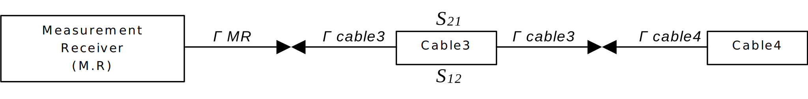

Technical Specification Group Radio Access Network;
NR;
User Equipment (UE) conformance specification;
UE TRP (Total Radiated Power) and TRS (Total Radiated Sensitivity)
requirements and test methodologies for FR1 (NR SA and EN-DC);
(Release 17)
The present document has been developed within the 3rd
Generation Partnership Project (3GPP TM) and may be further
elaborated for the purposes of 3GPP.
The present document has not been subject to any approval process by the
3GPP Organizational Partners and shall not be implemented.
This Specification is provided for future development work within 3GPP
only. The Organizational Partners accept no liability for any use of
this Specification.
Specifications and Reports for implementation of the 3GPP TM
system should be obtained via the 3GPP Organizational Partners'
Publications Offices.
Keywords
5GS, UE, terminal, testing
3GPP
Postal address
3GPP support office address
650 Route des Lucioles - Sophia Antipolis
Valbonne - FRANCE
Tel.: +33 4 92 94 42 00 Fax: +33 4 93 65 47 16
Internet
http://www.3gpp.org
Copyright Notification
No part may be reproduced except as authorized by written
permission.
The copyright and the foregoing restriction extend to reproduction in
all media.
UMTS™ is a Trade Mark of ETSI registered for the benefit of its
members
3GPP™ is a Trade Mark of ETSI registered for the benefit of its
Members and of the 3GPP Organizational Partners
LTE™ is a Trade Mark of ETSI registered for the benefit of its Members
and of the 3GPP Organizational Partners
GSM® and the GSM logo are registered and owned by the GSM
Association
This Technical Specification has been produced by the 3rd Generation
Partnership Project (3GPP).
The contents of the present document are subject to continuing work
within the TSG and may change following formal TSG approval. Should the
TSG modify the contents of the present document, it will be re-released
by the TSG with an identifying change of release date and an increase in
version number as follows:
Version x.y.z
where:
x the first digit:
1 presented to TSG for information;
2 presented to TSG for approval;
3 or greater indicates TSG approved document under change
control.
y the second digit is incremented for all changes of substance, i.e.
technical enhancements, corrections, updates, etc.
z the third digit is incremented when editorial only changes have
been incorporated in the document.
In the present document, modal verbs have the following meanings:
shall indicates a mandatory requirement to do
something
shall not indicates an interdiction (prohibition) to
do something
The constructions "shall" and "shall not" are confined to the context
of normative provisions, and do not appear in Technical Reports.
The constructions "must" and "must not" are not used as substitutes
for "shall" and "shall not". Their use is avoided insofar as possible,
and they are not used in a normative context except in a direct citation
from an external, referenced, non-3GPP document, or so as to maintain
continuity of style when extending or modifying the provisions of such a
referenced document.
should indicates a recommendation to do
something
should not indicates a recommendation not to do
something
may indicates permission to do something
need not indicates permission not to do
something
The construction "may not" is ambiguous and is not used in normative
elements. The unambiguous constructions "might not" or "shall not" are
used instead, depending upon the meaning intended.
can indicates that something is possible
cannot indicates that something is impossible
The constructions "can" and "cannot" are not substitutes for "may"
and "need not".
will indicates that something is certain or expected
to happen as a result of action taken by an agency the behaviour of
which is outside the scope of the present document
will not indicates that something is certain or
expected not to happen as a result of action taken by an agency the
behaviour of which is outside the scope of the present document
might indicates a likelihood that something will
happen as a result of action taken by some agency the behaviour of which
is outside the scope of the present document
might not indicates a likelihood that something will
not happen as a result of action taken by some agency the behaviour of
which is outside the scope of the present document
In addition:
is (or any other verb in the indicative mood)
indicates a statement of fact
is not (or any other negative verb in the indicative
mood) indicates a statement of fact
The constructions "is" and "is not" do not indicate requirements.
1 Scope
The present document specifies details of conformance testing of UE
TRP (Total Radiated Power) and TRS (Total Radiated Sensitivity)
requirements and test methodologies for FR1 (NR SA and EN-DC).
2 References
The following documents contain provisions which, through reference
in this text, constitute provisions of the present document.
References are either specific (identified by date of publication,
edition number, version number, etc.) or non‑specific.
For a specific reference, subsequent revisions do not apply.
For a non-specific reference, the latest version applies. In the case
of a reference to a 3GPP document (including a GSM document), a
non-specific reference implicitly refers to the latest version of that
document in the same Release as the present document.
[1] 3GPP TS 38.161: “User Equipment (UE) TRP (Total Radiated Power)
and TRS (Total Radiated Sensitivity) requirements; Range 1 Standalone
and Range 1 Interworking operation with other radios
[2] 3GPP TS 38.508-1: "5GS; User Equipment (UE) conformance
specification; Part 1: Common test environment "
[3] 3GPP TS 38.101-1: "NR; User Equipment (UE) radio transmission and
reception; Part 1: Range 1 Standalone".
[4] JCGM 100:2008: “Evaluation of measurement data — Guide to the
expression of uncertainty in measurement”.
[5] ETSI TR 102 273-1-1: “Electromagnetic compatibility and Radio
spectrum Matters (ERM); Improvement on Radiated Methods of Measurement
(using test site) and evaluation of the corresponding measurement
uncertainties; Part 1: Uncertainties in the measurement of mobile radio
equipment characteristics; Sub-part 1: Introduction”.
[6] ETSI TR 100 028-2: “ElectroMagnetic Compatibility and Radio
Spectrum Matters (ERM); Uncertainties in the measurement of mobile radio
equipment characteristics; Part 2”.
[7] ETSI TR 102 273-1-2: “Electromagnetic compatibility and Radio
spectrum Matters (ERM); Improvement on Radiated Methods of Measurement
(using test site) and evaluation of the corresponding measurement
uncertainties; Part 1: Uncertainties in the measurement of mobile radio
equipment characteristics; Sub-part 2: Examples and annexes”.
[8] CTIA Certification™: “CTIA Certification Test Plan for Wireless
Device Over-the-Air Performance, CTIA 01.70: Measurement Uncertainty”,
latest active version available at: https://ctiacertification.org/test-plans/
[9] Foegelle, M.D., “The Surface Standard Deviation Method for TRP
Measurement Uncertainty”, 25th Proceedings of the Antenna Measurement
Techniques Association (AMTA 2003), A03-027
[10] 3GPP TR 38.834: “Measurements of User Equipment (UE)
Over-the-Air (OTA) performance for NR FR1; Total Radiated Power (TRP)
and Total Radiated Sensitivity (TRS) test methodology (Release 17)”
[11] 3GPP TS 38.521-1: "NR; User Equipment (UE) conformance
specification; Radio transmission and reception; Part 1: Range 1
Standalone"
[12] CTIA Certification™: “CTIA Certification Test Plan for Wireless
Device Over-the-Air Performance, CTIA 01.72: Near-Field Phantoms”,
latest active version available at: https://ctiacertification.org/test-plans/
[13] CTIA Certification™: “CTIA Certification Test Plan for Wireless
Device Over-the-Air Performance, CTIA 01.71 Device Setup and Positioning
Guidelines”, latest active version available at: https://ctiacertification.org/test-plans/
[14] 3GPP TS 38.521-3: "NR; User Equipment (UE) conformance
specification; Radio transmission and reception; Part 3: Range 1 and
Range 2 Interworking operation with other radios"
[15] 3GPP TS 37.544: "Universal Terrestrial Radio Access (UTRA) and
Evolved UTRA (E-UTRA); User Equipment (UE) Over The Air (OTA)
performance; Conformance testing"
[16] 3GPP TS 21.905: “Vocabulary for 3GPP Specifications”
[17] 3GPP TS 38.101-3: “NR; User Equipment (UE) radio transmission
and reception; Part 3: Range 1 and Range 2 Interworking operation with
other radios”
3 Definitions of
terms, symbols, and abbreviations
3.1 Terms
For the purposes of the present document, the terms given in 3GPP
TR 21.905 [16] and the following apply. A term defined in the present
document takes precedence over the definition of the same term, if any,
in 3GPP TR 21.905 [1].
Browsing mode usage: This mode corresponds to “data”
mode, the device is tested via hand-only phantoms.
Primary mechanical mode: The mode that is most often
used for a specific user scenario. Every terminal has at least one
primary mechanical mode, if multiple modes are supported, different
primary mechanical modes may be applicable for different user scenarios,
e.g., different primary mechanical modes for Browsing mode usage and
Talk mode usage for the same UE.
Talk mode usage: This mode corresponds to “talk”
mode, the device is tested via head & hand phantoms.
3.2 Symbols
For the purposes of the present document, the following symbols
apply:
TRPaverage The average measured total radiated
power of low, mid and high channel. When hand phantom is involved, the
average is performed with low, mid and high channel from both hand left
and hand right.
TRSaverage The average measured total radiated
sensitivity of low, mid and high channel. When hand phantom is involved,
the average is performed with low, mid and high channel from both hand
left and hand right.
3.3 Abbreviations
For the purposes of the present document, the abbreviations given in
3GPP TR 21.905 [1] and the following apply. An abbreviation defined in
the present document takes precedence over the definition of the same
abbreviation, if any, in 3GPP TR 21.905 [1].
AC Anechoic Chamber
BHHL Beside Head and Hand Left Side (Head and Hand Phantom)
BHHR Beside Head and Hand Right Side (Head and Hand Phantom)
DUT Device Under Test
EIRP Effective Isotropic Radiated Power
EUT Equipment Under Test
FR1 RF Frequency Range 1
FS Free Space
HL Hand Left (Hand Phantom Only)
HR Hand Right (Hand Phantom Only)
NSA Non-Standalone, a mode of operation where operation of another
radio is assisted with another radio
OTA Over The Air
QZ Quiet Zone
SA Standalone
SS System Simulator
TAA Time-Averaging Algorithm
TAS Transmit Antenna Switching
TRP Total Radiated Power
TRS Total Radiated Sensitivity
UE User Equipment
4 General
4.1
Relationship between minimum requirements and test requirements
The Minimum Requirements given in TS 38.161 [1] make no allowance for
measurement uncertainty. This test specification will define test
tolerances for FR1 TRP TRS. The test tolerances are used to relax the
minimum requirements in TS 38.161 [1] to create test requirements.
4.2 Applicability of
minimum requirements
4.2.1 General
The minimum requirements apply only to the corresponding primary
mechanical mode of UE in the environmental conditions specified in Annex
C.4.2.2.
4.2.1 UE mechanical modes
The mechanical modes of a device under test (DUT) are declared by the
manufacturer. A DUT shall have at least one mechanical mode. If only one
mode is supported, then this is defined as the primary. If multiple
modes are supported, the manufacturer can declare different primary
mechanical modes applicable for different user scenarios, e.g.,
different primary mechanical mode for Browsing mode usage and Talk mode
usage for the same UE.
4.3
Applicability rules for testing of FR1 SA and NSA UEs
1. The applicability and test coverage rules for Non-Standalone (NSA)
only capable devices shall include the following:
a) For each NR band supported by the device, test the UE in EN-DC
mode using any one example configuration containing that NR band or
configuration declaration decision tree as per recommended TRP/TRS test
procedures in this specification.
2. The applicability and test coverage rules for Standalone (SA) and
NSA (EN-DC) capable devices shall include the following:
a) For each NR band in a device, test the UE in Standalone Mode as
per the TRP/TRS test procedures in this specification.
b) This shall also fulfil coverage for all EN-DC FR1 minimum
performance requirements for that NR band and need not be retested in
EN-DC mode.
4.4
Applicability rules for testing of power class capability of UEs
1. The applicability and test coverage rules for PC2 and PC3 UEs
shall include the following:
a) For UEs that support PC2 in a given band: verify the requirement
only with PC2 configuration
b) For UEs that only support PC3 in a given band: verify the
requirement with PC3 configuration
NOTE 1: The test procedure and requirements in this version of the
specification apply only for UEs based on 1 Tx configuration and are not
applicable to UEs under TxD and UL MIMO configurations.
5 Frequency Bands
5.1 General
This clause contains the operating bands for both Standalone (SA) and
Non-Standalone (NSA) operation in frequency range 1 (FR1) as well as the
test parameters for each band.
5.2 Operating Bands
5.2.1 FR1 Standalone Operating
bands
The requirements defined in this specification for FR1 standalone
apply to the operating bands defined in Table 5.2.1-1.
Table 5.2.1-1: NR operating bands in FR1 standalone
NR operating band
Uplink (UL) operating band
BS receive / UE transmit
FUL_low – FUL_high
Downlink (DL) operating band
BS transmit / UE receive
FDL_low – FDL_high
Duplex Mode
n1
1920 MHz – 1980 MHz
2110 MHz – 2170 MHz
FDD
n2
1850 MHz – 1910 MHz
1930 MHz – 1990 MHz
FDD
n3
1710 MHz – 1785 MHz
1805 MHz – 1880 MHz
FDD
n5
824 MHz – 849 MHz
869 MHz – 894 MHz
FDD
n7
2500 MHz – 2570 MHz
2620 MHz – 2690 MHz
FDD
n8
880 MHz – 915 MHz
925 MHz – 960 MHz
FDD
n12
699 MHz – 716 MHz
729 MHz – 746 MHz
FDD
n14
788 MHz – 798 MHz
758 MHz – 768 MHz
FDD
n20
832 MHz – 862 MHz
791 MHz – 821 MHz
FDD
n25
1850 MHz – 1915 MHz
1930 MHz – 1995 MHz
FDD
n26
814 MHz – 849 MHz
859 MHz – 894 MHz
FDD
n28
703 MHz – 748 MHz
758 MHz – 803 MHz
FDD
n30
2305 MHz – 2315 MHz
2350 MHz – 2360 MHz
FDD
n34
2010 MHz – 2025 MHz
2010 MHz – 2025 MHz
TDD
n38
2570 MHz – 2620 MHz
2570 MHz – 2620 MHz
TDD
n39
1880 MHz – 1920 MHz
1880 MHz – 1920 MHz
TDD
n40
2300 MHz – 2400 MHz
2300 MHz – 2400 MHz
TDD
n41
2496 MHz – 2690 MHz
2496 MHz – 2690 MHz
TDD
n48
3550 MHz – 3700 MHz
3550 MHz – 3700 MHz
TDD
n50
1432 MHz – 1517 MHz
1432 MHz – 1517 MHz
TDD1
n51
1427 MHz – 1432 MHz
1427 MHz – 1432 MHz
TDD
n53
2483.5 MHz – 2495 MHz
2483.5 MHz – 2495 MHz
TDD
n65
1920 MHz – 2010 MHz
2110 MHz – 2200 MHz
FDD4
n66
1710 MHz – 1780 MHz
2110 MHz – 2200 MHz
FDD
n70
1695 MHz – 1710 MHz
1995 MHz – 2020 MHz
FDD
n71
663 MHz – 698 MHz
617 MHz – 652 MHz
FDD
n74
1427 MHz – 1470 MHz
1475 MHz – 1518 MHz
FDD
n75
N/A
1432 MHz – 1517 MHz
SDL
n76
N/A
1427 MHz – 1432 MHz
SDL
n7712
3300 MHz – 4200 MHz
3300 MHz – 4200 MHz
TDD
n78
3300 MHz – 3800 MHz
3300 MHz – 3800 MHz
TDD
n79
4400 MHz – 5000 MHz
4400 MHz – 5000 MHz
TDD
n80
1710 MHz – 1785 MHz
N/A
SUL
n81
880 MHz – 915 MHz
N/A
SUL
n82
832 MHz – 862 MHz
N/A
SUL
n83
703 MHz – 748 MHz
N/A
SUL
n84
1920 MHz – 1980 MHz
N/A
SUL
n86
1710 MHz – 1780 MHz
N/A
SUL
n95
2010 MHz – 2025 MHz
N/A
SUL
Other operating bands may be considered in future releases.
5.2.2 FR1 EN-DC band
combinations
Principle of EN-DC band combinations selection for FR1 TRP TRS OTA
testing:
1. Focus on the performance of the NR carrier and do not consider
multiple permutations between different LTE bands and NR band under
test, i.e., for each NR band, only select one EN-DC band
combination.
2. For UE supporting multiple EN-DC band combinations for the same NR
band, consider only those EN-DC configurations which have no MSD impact
on either LTE or NR, i.e., the selected EN-DC combination should be no
MSD issue identified in TS 38.101-3 [17] Section 7.3B.2.3 (Inter-band
EN-DC within FR1).
Table 5.2.2-1: Measurement parameters for example inter-band EN-DC
band combinations (two bands)
EN-DC
configuration
E-UTRA configurations
NR configurations
DC_3A_n28A
Note1
Note2
DC_2A_n41A
Note1
Note2
DC_1A_n78A
Note1
Note2
DC_1A_n79A
Note1
Note2
Note 1: As per TR 37.902 [10], Section 6.4
(Measurement frequencies).
Note 2: As per Table 4.3.3-1 and Table 4.3.3-2 in TR 38.834.
With the above basic principle and EN-DC example band combination,
the selection logic for testing is defined by the decision tree
below.
Figure 5.2.2-2: Decision tree to select the EN-DC band combination
for TRP/TRS testing
5.3 Test parameters for each
band
The detailed testing parameters for each band is defined in Table
5.3-1 and Table 5.3-2.
Table 5.3-1: NR FR1 TRP measurement parameters
NR Band
CBW
[MHz]
SCS (kHz)
UL modulation
Range
UL Carrier centre
[ARFCN]
UL Carrier Center (MHz)
DL Carrier centre
[ARFCN]
DL Carrier Center (MHz)
UL RB Allocation
(LCRB @ RBstart)
DL configuration
n1
15
15
DFT-s-OFDM
QPSK
Low
385500
1927.5
423500
2117.5
36@18
N/A
Mid
390000
1950
428000
2140
High
394500
1972.5
432500
2162.5
n2
15
15
DFT-s-OFDM
QPSK
Low
371500
1857.5
387500
1937.5
36@18
N/A
Mid
376000
1880
392000
1960
High
380500
1902.5
396500
1982.5
n3
20
15
DFT-s-OFDM
QPSK
Low
344000
1720
363000
1815
50@25
N/A
Mid
349500
1747.5
368500
1842.5
High
355000
1775
374000
1870
n5
15
15
DFT-s-OFDM
QPSK
Low
166300
831.5
175300
876.5
36@18
N/A
Mid
167300
836.5
176300
881.5
High
168300
841.5
177300
886.5
n7
15
15
DFT-s-OFDM
QPSK
Low
501500
2507.5
525500
2627.5
36@18
N/A
Mid
507000
2535
531000
2655
High
512500
2562.5
536500
2682.5
n8
15
15
DFT-s-OFDM
QPSK
Low
177500
887.5
186500
932.5
36@18
N/A
Mid
179500
897.5
188500
942.5
High
181500
907.5
190500
952.5
n12
10
15
DFT-s-OFDM
QPSK
Low
140800
704
146800
734
25@12
N/A
Mid
141500
707.5
147500
737.5
High
142200
711
148200
741
n14
10
15
DFT-s-OFDM
QPSK
Low
158600
793
152600
763
25@12
N/A
Mid
High
n20
15
15
DFT-s-OFDM
QPSK
Low
167900
839.5
159700
798.5
36@18
N/A
Mid
169400
847
161200
806
High
170900
854.5
162700
813.5
n25
15
15
DFT-s-OFDM
QPSK
Low
371500
1857.5
387500
1937.5
36@18
N/A
Mid
376500
1882.5
392500
1962.5
High
381500
1907.5
397500
1987.5
n26
10
15
DFT-s-OFDM
QPSK
Low
163800
819
172800
864
25@12
N/A
Mid
166300
831.5
175300
876.5
High
168800
844
177800
889
n28
20
15
DFT-s-OFDM
QPSK
Low
142600
713
153600
768
50@25
N/A
Mid
145600
728
156600
783
High
147600
738
158600
793
n30
10
15
DFT-s-OFDM
QPSK
Low
462000
2310
471000
2355
25@12
N/A
Mid
High
n34
10
15
DFT-s-OFDM
QPSK
Low
403000
2015
403000
2015
25@12
N/A
Mid
403500
2017.5
403500
2017.5
High
404000
2020
404000
2020
n38
15
15
DFT-s-OFDM
QPSK
Low
515500
2577.5
515500
2577.5
36@18
N/A
Mid
519000
2595
519000
2595
High
522500
2612.5
522500
2612.5
n39
20
15
DFT-s-OFDM
QPSK
Low
378000
1890
378000
1890
50@25
N/A
Mid
380000
1900
380000
1900
High
382000
1910
382000
1910
n40
30
15
DFT-s-OFDM
QPSK
Low
463000
2315
463000
2315
[50@25]
N/A
Mid
470000
2350
470000
2350
High
477000
2385
477000
2385
n41
100
30
DFT-s-OFDM
QPSK
Low
509202
2546.01
509202
2546.01
135@67
N/A
Mid
518598
2592.99
518598
2592.99
High
528000
2640
528000
2640
n48
20
15
DFT-s-OFDM
QPSK
Low
637334
3560.01
637334
3560.01
50@25
N/A
Mid
641666
3624.99
641666
3624.99
High
646000
3690
646000
3690
n50
20
15
DFT-s-OFDM
QPSK
Low
288400
1442
288400
1442
50@25
N/A
Mid
294900
1474.5
294900
1474.5
High
301400
1507
301400
1507
n51
5
15
DFT-s-OFDM
QPSK
Low
285900
1429.5
285900
1429.5
12@6
N/A
Mid
High
n53
10
15
DFT-s-OFDM
QPSK
Low
497700
2488.5
497700
2488.5
25@12
N/A
Mid
497860
2489.3
497860
2489.3
High
498000
2490
498000
2490
n65
15
15
DFT-s-OFDM
QPSK
Low
423500
2117.5
423500
2117.5
36@18
N/A
Mid
431000
2155
431000
2155
High
438500
2192.5
438500
2192.5
n66
20 (20+20)
15
DFT-s-OFDM
QPSK
Low
344000
1720
424000
2120
50@25
N/A
Mid
349000
1745
429000
2145
High
354000
1770
434000
2170
n70
15 (15+15)
15
DFT-s-OFDM
QPSK
Low
340500
1702.5
400500
2002.5
36@18
N/A
Mid
High
n71
10
15
DFT-s-OFDM
QPSK
Low
133600
668
124400
622
25@12
N/A
Mid
136100
680.5
126900
634.5
High
138600
693
129400
647
n74
15
15
DFT-s-OFDM
QPSK
Low
286900
1434.5
296500
1482.5
36@18
N/A
Mid
289700
1448.5
299300
1496.5
High
292500
1462.5
302100
1510.5
n77
100
30
DFT-s-OFDM
QPSK
Low
623334
3350.01
623334
3350.01
135@67
N/A
Mid
650000
3750
650000
3750
High
676666
4149.99
676666
4149.99
n78
100
30
DFT-s-OFDM
QPSK
Low
623334
3350.01
623334
3350.01
135@67
N/A
Mid
636666
3549.99
636666
3549.99
High
650000
3750
650000
3750
n79
100
30
DFT-s-OFDM
QPSK
Low
696668
4450.02
696668
4450.02
135@67
N/A
Mid
713334
4700.01
713334
4700.01
High
730000
4950
730000
4950
n80
20
15
DFT-s-OFDM
QPSK
Low
344000
1720
N/A
N/A
50@25
N/A
Mid
349500
1747.5
N/A
N/A
High
355000
1775
N/A
N/A
n81
15
15
DFT-s-OFDM
QPSK
Low
177500
887.5
N/A
N/A
36@18
N/A
Mid
179500
897.5
N/A
N/A
High
181500
907.5
N/A
N/A
n82
15
15
DFT-s-OFDM
QPSK
Low
167900
839.5
N/A
N/A
36@18
N/A
Mid
169400
847
N/A
N/A
High
170900
854.5
N/A
N/A
n83
15
15
DFT-s-OFDM
QPSK
Low
142100
710.5
N/A
N/A
36@18
N/A
Mid
145100
725.5
N/A
N/A
High
148100
740.5
N/A
N/A
n84
15
15
DFT-s-OFDM
QPSK
Low
385500
1927.5
N/A
N/A
36@18
N/A
Mid
390000
1950
N/A
N/A
High
394500
1972.5
N/A
N/A
n86
20
15
DFT-s-OFDM
QPSK
Low
344000
1720
N/A
N/A
50@25
N/A
Mid
349000
1745
N/A
N/A
High
354000
1770
N/A
N/A
N95
10
15
DFT-s-OFDM
QPSK
Low
403000
2015
N/A
N/A
50@25
N/A
Mid
403500
2017.5
N/A
N/A
High
404000
2020
N/A
N/A
Table 5.3-2: NR FR1 TRS measurement parameters
NR Band
CBW
(MHz)
SCS (kHz)
DL modulation
UL modulation
Range
UL Carrier centre
[ARFCN]
UL Carrier Center (MHz)
DL Carrier centre
[ARFCN]
DL Carrier Center (MHz)
UL RB Allocation
(LCRB @ RBstart)
DL Configuration (FULL RB, LCRB @
RBstart)
n1
15
15
CP-OFDM QPSK
DFT-s-OFDM
QPSK
Low
385500
1927.5
423500
2117.5
75@4
79@0
Mid
390000
1950
428000
2140
High
394500
1972.5
432500
2162.5
n2
15
15
CP-OFDM QPSK
DFT-s-OFDM
QPSK
Low
371500
1857.5
387500
1937.5
50@29
79@0
Mid
376000
1880
392000
1960
High
380500
1902.5
396500
1982.5
n3
20
15
CP-OFDM QPSK
DFT-s-OFDM
QPSK
Low
344000
1720
363000
1815
50@56
106@0
Mid
349500
1747.5
368500
1842.5
High
355000
1775
374000
1870
n5
15
15
CP-OFDM QPSK
DFT-s-OFDM
QPSK
Low
166300
831.5
175300
876.5
25@54
79@0
Mid
167300
836.5
176300
881.5
High
168300
841.5
177300
886.5
n7
15
15
CP-OFDM QPSK
DFT-s-OFDM
QPSK
Low
501500
2507.5
525500
2627.5
75@4
79@0
Mid
507000
2535
531000
2655
High
512500
2562.5
536500
2682.5
n8
15
15
CP-OFDM QPSK
DFT-s-OFDM
QPSK
Low
177500
887.5
186500
932.5
25@54
79@0
Mid
179500
897.5
188500
942.5
High
181500
907.5
190500
952.5
n12
10
15
CP-OFDM QPSK
DFT-s-OFDM
QPSK
Low
140800
704
146800
734
20@32
52@0
Mid
141500
707.5
147500
737.5
High
142200
711
148200
741
n14
10
15
CP-OFDM QPSK
DFT-s-OFDM
QPSK
Low
158600
793
152600
763
20@32
52@0
Mid
High
n20
15
15
CP-OFDM QPSK
DFT-s-OFDM
QPSK
Low
167900
839.5
159700
798.5
20@11
79@0
Mid
169400
847
161200
806
High
170900
854.5
162700
813.5
n25
15
15
CP-OFDM QPSK
DFT-s-OFDM
QPSK
Low
371500
1857.5
387500
1937.5
50@29
79@0
Mid
376500
1882.5
392500
1962.5
High
381500
1907.5
397500
1987.5
n26
10
15
CP-OFDM QPSK
DFT-s-OFDM
QPSK
Low
163800
819
172800
864
25@27
52@0
Mid
166300
831.5
175300
876.5
High
168800
844
177800
889
n28
20
15
CP-OFDM QPSK
DFT-s-OFDM
QPSK
Low
142600
713
153600
768
25@81
106@0
Mid
145600
728
156600
783
High
147600
738
158600
793
n30
10
15
CP-OFDM QPSK
DFT-s-OFDM
QPSK
Low
462000
2310
471000
2355
20@32
52@0
Mid
High
n34
10
15
CP-OFDM QPSK
DFT-s-OFDM
QPSK
Low
403000
2015
403000
2015
50@0
52@0
Mid
403500
2017.5
403500
2017.5
High
404000
2020
404000
2020
n38
15
15
CP-OFDM QPSK
DFT-s-OFDM
QPSK
Low
515500
2577.5
515500
2577.5
75@0
79@0
Mid
519000
2595
519000
2595
High
522500
2612.5
522500
2612.5
n39
20
15
CP-OFDM QPSK
DFT-s-OFDM
QPSK
Low
378000
1890
378000
1890
100@0
106@0
Mid
380000
1900
380000
1900
High
382000
1910
382000
1910
n40
30
15
CP-OFDM QPSK
DFT-s-OFDM
QPSK
Low
463000
2315
463000
2315
160@0
160@0
Mid
470000
2350
470000
2350
High
477000
2385
477000
2385
n41
100
30
CP-OFDM QPSK
DFT-s-OFDM
QPSK
Low
509202
2546.01
509202
2546.01
270@0
273@0
Mid
518598
2592.99
518598
2592.99
High
528000
2640
528000
2640
n48
20
15
CP-OFDM QPSK
DFT-s-OFDM
QPSK
Low
637334
3560.01
637334
3560.01
100@0
106@0
Mid
641666
3624.99
641666
3624.99
High
646000
3690
646000
3690
n50
20
15
CP-OFDM QPSK
DFT-s-OFDM
QPSK
Low
288400
1442
288400
1442
100@0
106@0
Mid
294900
1474.5
294900
1474.5
High
301400
1507
301400
1507
n51
5
15
CP-OFDM QPSK
DFT-s-OFDM
QPSK
Low
285900
1429.5
285900
1429.5
25@0
25@0
Mid
High
n53
10
15
CP-OFDM QPSK
DFT-s-OFDM
QPSK
Low
497700
2488.5
497700
2488.5
50@0
52@0
Mid
497860
2489.3
497860
2489.3
High
498000
2490
498000
2490
n65
15
15
CP-OFDM QPSK
DFT-s-OFDM
QPSK
Low
423500
2117.5
423500
2117.5
75@4
79@0
Mid
431000
2155
431000
2155
High
438500
2192.5
438500
2192.5
n66
20 (20+20)
15
CP-OFDM QPSK
DFT-s-OFDM
QPSK
Low
344000
1720
424000
2120
100@6
106@0
Mid
349000
1745
429000
2145
High
354000
1770
434000
2170
n70
15
15
CP-OFDM QPSK
DFT-s-OFDM
QPSK
Low
340500
1702.5
400500
2002.5
75@4
79@0
Mid
High
n71
10
15
CP-OFDM QPSK
DFT-s-OFDM
QPSK
Low
133600
668
124400
622
25@0
52@0
Mid
136100
680.5
126900
634.5
High
138600
693
129400
647
n74
15
15
CP-OFDM QPSK
DFT-s-OFDM
QPSK
Low
286900
1434.5
296500
1482.5
25@54
79@0
Mid
289700
1448.5
299300
1496.5
High
292500
1462.5
302100
1510.5
n75 SDL
15
15
CP-OFDM QPSK
DFT-s-OFDM
QPSK
Low
N/A
N/A
287900
1439.5
NA
79@0
Mid
N/A
N/A
294900
1474.5
High
N/A
N/A
301900
1509.5
n76 SDL
5
15
CP-OFDM QPSK
DFT-s-OFDM
QPSK
Low
N/A
N/A
285900
1429.5
NA
25@0
Mid
High
n77
100
30
CP-OFDM QPSK
DFT-s-OFDM
QPSK
Low
623334
3350.01
623334
3350.01
270@0
273@0
Mid
650000
3750
650000
3750
High
676666
4149.99
676666
4149.99
n78
100
30
CP-OFDM QPSK
DFT-s-OFDM
QPSK
Low
623334
3350.01
623334
3350.01
270@0
273@0
Mid
636666
3549.99
636666
3549.99
High
650000
3750
650000
3750
n79
100
30
CP-OFDM QPSK
DFT-s-OFDM
QPSK
Low
696668
4450.02
696668
4450.02
270@0
273@0
Mid
713334
4700.01
713334
4700.01
High
730000
4950
730000
4950
6 FR1 Transmitter (TRP)
Performance
6.1 General
The TRP requirements specified in this clause 6 apply to handheld UE
with Transmit Antenna Switching (TAS) switched OFF and any power
back-off functions disabled.
The TRP requirements defined in Clause 6.2 should be verified based
on the detailed test parameters in Table 5.3-1.
6.2 TRP Performance for
Handheld UE
6.2.1
TRP Performance for Handheld UE for FR1 (NR SA and EN-DC)
6.2.1.1
Total Radiated Power (TRP) in Browsing Mode with Hand Phantom
6.2.1.1.1
Total Radiated Power (TRP) for FR1 NR Standalone (SA) in Browsing Mode
with Hand Phantom
6.2.1.1.1.1 Test Purpose
To verify that the total radiated power (TRP) of a 5G NR FR1 UE, in
browsing mode with Hand phantom only, does not exceed the range
prescribed by the specified nominal maximum output power and
tolerance.
An excess maximum output power has the possibility to interfere to
other channels or other systems. A small maximum output power decreases
the coverage area.
6.2.1.1.1.2 Test
applicability
This test case applies to all types of NR Power Class 2 and Power
Class 3 UE Release 17 and forward that do not support Transmit
Diversity.
6.2.1.1.1.3 Minimum
conformance requirements
The average measured Total Radiated Power (TRP) of low, mid and high
channel for handheld UE shall be higher than the average TRP requirement
specified in subclauses 6.2.1.1 and 6.2.1.2. The averaging shall be done
in linear scale for the TRP results of both right and left side of the
phantom head in case of beside the head and hand phantom positions. For
the hand phantom browsing mode position the averaging shall be done in
linear scale for the TRP results of both right and left hand phantom
measurements.
For UEs which do not support NR FR1 in stand-alone mode, EN-DC mode
requirements apply. SA and EN-DC test case applicability is defined in
Clause 4.3, and test case applicability based on power class capability
is defined in Clause 4.4. The relevant test methodology is defined in
Annexes A and B of the present document.
6.2.1.1.1.3.1 Hand
phantom browsing mode
Hand phantom browsing mode positions are defined in Clause B.3.1.
6.2.1.1.1.3.2
Minimum conformance requirements for NR FR1 in hand phantom browsing
position
Handheld UE TRP minimum performance requirement for NR FR1 bands in
the hand phantom browsing position and the primary mechanical mode are
defined in Tables 6.2.1.1.1.3.2-1 and 6.2.1.1.1.3.2-2.
Table 6.2.1.1.1.3.2-1: Handheld PC3 UE TRP minimum performance
requirement for NR FR1 bands in the hand phantom browsing position and
the primary mechanical mode
NR Band
Bandwidth (MHz)
Usage Scenario
Power Class 3
Average TRP (dBm)
UE width ≤ 72mm
UE width > 72mm
n28
20
HL and HR
n41
100
HL and HR
n78
100
HL and HR
n79
100
HL and HR
Table 6.2.1.1.1.3.2-2: Handheld PC2 UE TRP minimum performance
requirement for NR FR1 bands in the hand phantom browsing position and
the primary mechanical mode
NR Band
Bandwidth (MHz)
Usage Scenario
Power Class 2
Average TRP (dBm)
UE width ≤ 72mm
UE width > 72mm
n28
20
HL and HR
n41
100
HL and HR
12.5
n78
100
HL and HR
13
n79
100
HL and HR
The normative reference for this requirement is TS 38.161 [1] clause
6.2.1.1.1.
6.2.1.1.1.4 Test description
6.2.1.1.1.4.1 Initial
conditions
Initial conditions are a set of test configurations the UE needs to
be tested in and the steps for the SS to take with the UE to reach the
correct measurement state.
The initial test configurations consist of environmental conditions,
test frequencies, test channel bandwidths and sub-carrier spacing based
on NR operating bands specified in table 5.2.1-1. All of these
configurations shall be tested with applicable test parameters for each
combination of test channel bandwidth and sub-carrier spacing and are
shown in table 5.3-1. The details of the uplink reference measurement
channels (RMCs) mainly comprising the uplink modulation and uplink RB
allocation are also specified in Table 5.3-1 . Configurations of PDSCH
and PDCCH before measurement are specified in Annex A.0
The following steps are recommended as per TR 38.834 [10]:
- P-MPRc shall be 0 dB.
- FR1 TRP radiated conformance testing shall be performed with the UE
consistently operating at maximum power level, e.g., Time-Averaged
Algorithm (TAA) and other power back-off functions should be disabled.
The above functions being OFF should be based on manufacturer
declaration; if declared, then the manufacturer is required to provide a
mechanism for the test lab to enable/disable the function.
- The NR SS should send continuous uplink power control “up” commands
to the DUT to ensure the DUT’s transmitter is at maximum output power
during the SA TRP and TRS test.
- It is recommended to disable Transmit Antenna Switching (TAS) as
per the procedure defined in Annex A.3.6
1. For DUT containing multiple Tx antennas, it shall be ensured that
the Tx Antenna Switching (TAS) function should be OFF, and the TRP
should be measured for each Tx antenna individually.
NOTE: The primary antenna should be selected based on manufacturer
declaration. In the absence of manufacturer declaration, the antenna
with better TRP is identified as the primary antenna, and the
corresponding TRP result will be used to determine the pass/fail
compliance.
2. Connect the SS to the UE antenna connectors as shown in TS
38.508-1 [2] Annex A, Figure A.3.1.1.1 for TE diagram and section A.3.2
for UE diagram.
3. The parameter settings for the cell are set up according to TS
38.508-1 [2] subclause 4.4.3.
4. Downlink signals are initially set up according to Annex C in TS
38.521-1 [11and uplink signals according to Annex G in TS. 38.521-1
[11].
5. The UL and DL parameters are set according to Table 5.3-1.
6. Propagation conditions are set to Static.
7. Ensure the UE is in state RRC_CONNECTED with generic procedure
parameters Connectivity NR, Connected without release On, Test Mode On
and Test Loop Function On according to TS 38.508-1 [2] clause 4.5.
Message contents are defined in clause 6.2.1.4.3.
6.2.1.1.1.4.2 Test procedure
For TRP measurement, the evaluations shall be performed at maximum
transmit power. The applicability rules for testing of UE power class in
clause 4.4 shall be followed. The measurement procedure includes the
following steps:
1. Place the DUT inside the QZ following the UE positioning
guidelines defined in Annex B.3.1.
2. SS sends uplink scheduling information for each UL HARQ process
via PDCCH DCI format 0_1 for C_RNTI to schedule the UL RMC according to
Table 5.3-1. For any additional RMC parameters beyond Table 5.3-2, refer
to Table 6.2.1.4.1-1 of TS 38.521-1 [11].. Since the UE has no payload
and no loopback data to send the UE sends uplink MAC padding bits on the
UL RMC.
3. Ensure the DUT transmits with its maximum power by continuously
sending uplink power control "up" commands in every uplink scheduling
information to the UE; allow at least 200ms starting from the first TPC
command in this step for the UE to reach PUMAX level.
4. The TRP of the DUT is measured by sampling the radiated transmit
power of the DUT with three-dimensional scan at various locations
surrounding the device. Measure the power at each measurement point, and
calculate \(EIRP(\theta,\phi)\) by
adding the composite loss of the entire transmission path.
5. The measurement is performed with a constant sampling step in both
theta () and phi () axes using any of the measurement grids and
quadrature options outlined and applicable to TRP in Table A.4.2.12-1.
Any of the measurement grids in Table A.4.2.12-1 could be used for
testing. Measurements at theta = 0 and 180 degrees only require one
measurement each. For test systems that cannot measure 180º EIRP, an
extrapolation approach shall be adopted when generating the 3D antenna
pattern and calculating TRP.
6. All the measured power values will be integrated to TRP, as
defined in Annex A.3.5.1 with the procedure further detailed in
A.3.3.2.
6.2.1.1.1.4.3 Message contents
Message contents are according to TS 38.508-1 [5] subclause 4.6 and
5.4 with the following exceptions.
Table 6.2.1.1.1.4.3-1: PUSCH-Config
Derivation Path: TS 38.508-1 [5], Table 4.6.3-118 with condition
TRANSFORM_PRECODER_ENABLED
6.2.1.1.1.5 Test requirement
The TRP across low, mid and high channels tested with hand phantom
browsing mode position shall be higher than test performance
requirements shown in Table 6.2.1.1.1.5-1 for Power Class 3 and
6.2.1.1.1.5-2 for Power Class 2.
Table 6.2.1.1.1.5-1: Handheld PC3 UE TRP test requirements for NR FR1
bands in the hand phantom browsing position and the primary mechanical
mode
NR Band
Bandwidth (MHz)
Usage Scenario
Power Class 3
Average TRP (dBm)
UE width ≤ 72mm
UE width > 72mm
n28
20
HL and HR
FFS
FFS
n41
100
HL and HR
FFS
FFS
n78
100
HL and HR
FFS
FFS
n79
100
HL and HR
FFS
FFS
Table 6.2.1.1.1.5-2: Handheld PC2 UE TRP test requirements for NR FR1
bands in the hand phantom browsing position and the primary mechanical
mode
NR Band
Bandwidth (MHz)
Usage Scenario
Power Class 2
Average TRP (dBm)
UE width ≤ 72mm
UE width > 72mm
n28
20
HL and HR
FFS
FFS
n41
100
HL and HR
FFS
12.5-TT
n78
100
HL and HR
FFS
13-TT
n79
100
HL and HR
FFS
FFS
Table 6.2.1.1.1.5-3: Test Tolerance (NR FR1 TRP)
Operating band
Test Tolerance (dB)
n41
1.02
n78
1.07
6.2.1.2
Total Radiated Power (TRP) in Talk Mode with Head and Hand Phantom
6.2.1.2.1
Total Radiated Power (TRP) for FR1 NR Standalone (SA) in Talk Mode with
Head and Hand Phantom
Editor’s note: This clause will stay incomplete during Release 17
work and only an initial framework is added for completeness of the
specification.
- Minimum Conformance Requirements for talk mode with head and hand
phantom is pending and will be determined as part of the Release 18 work
in RAN4
- Test Applicability is pending
- Test Procedure, Message Contents and Test Requirements are
pending.
- MU is pending. TT will be analysed in Release 18
6.2.1.2.1.1 Test purpose
To verify that the total radiated power (TRP) of a 5G NR FR1 UE in
talk mode with head and hand phantom does not exceed the range
prescribed by the specified nominal maximum output power and
tolerance.
An excess maximum output power has the possibility to interfere to
other channels or other systems. A small maximum output power decreases
the coverage area.
6.2.1.2.1.2 Test
applicability
Editor’s note: This sub-clause is in the scope of Release 18
6.2.1.2.1.3
Minimum conformance requirements
Editor’s note: This sub-clause is in the scope of Release 18
6.2.1.2.1.3.1
Head and Hand phantom browsing mode
Hand phantom browsing mode positions are defined in Clause B.3.1.
6.2.1.2.1.3.2
Minimum conformance requirements for NR FR1 in head and hand phantom
talk mode position
Editor’s note: This sub-clause is in the scope of Release 18
6.2.1.2.1.4 Test description
Editor’s note: This sub-clause is in the scope of Release 18
6.2.1.2.1.4.2 Test procedure
Editor’s note: This sub-clause is in the scope of Release 18
6.2.1.2.1.4.3 Message
contents
Editor’s note: This sub-clause is in the scope of Release 18
6.2.1.2.1.5 Test requirement
Editor’s note: This sub-clause is in the scope of Release 18
7 FR1 Receiver (TRS)
Performance
7.1 General
The TRS requirements specified in this clause 7 apply to handheld UE
configured with maximum number of Rx antennas supported for each band,
which is specified in TS 38.101-1 Clause 7.3 [3].
The TRS requirements defined in Clause 7.2 should be verified based
on the detailed test parameters in Table 5.3-2.
7.2 TRS Performance for
Handheld UE
7.2.1
TRS Performance for Handheld UE for FR1 (NR SA and EN-DC)
7.2.1.1
Total Radiated Sensitivity (TRS) in Browsing Mode with Hand Phantom
7.2.1.1.1
Total Radiated Sensitivity (TRS) for FR1 NR Standalone (SA) in Browsing
Mode with Hand Phantom
7.2.1.1.1.1 Test purpose
The purpose of this test is to ensure that \({TRS}_{average}\) of the UE, in browsing
mode with hand phantom only, is above specified limit. The lack of the
reception sensitivity decreases the coverage area at the far side from
Node B.
7.2.1.1.1.2 Test
applicability
This test case applies to all types of NR Power Class 2 and Power
Class 3 UEs Release 17 and forward.
7.2.1.1.1.3
Minimum conformance requirements
The average measured total radiated sensitivity (TRS) of low, mid and
high channel for handheld UE shall be lower than the average TRS
requirement specified in subclauses 7.2.1.1 and 7.2.1.2. The averaging
shall be done in linear scale for the TRS results of both right and left
side of the phantom head in case of beside the head and hand phantom
positions. For the hand phantom browsing mode position the averaging
shall be done in linear scale for the TRS results of both right and left
hand phantom measurements.
For UEs which do not support NR FR1 in stand-alone mode, EN-DC mode
requirements apply. SA and EN-DC test case applicability is defined in
Clause 4.3, and test case applicability based on power class capability
is defined in Clause 4.4. The relevant test methodology is defined in
Annexes A and B of the present document.
7.2.1.1.1.3.1 Hand
phantom browsing mode
Hand phantom browsing mode positions are defined in Clause B.3.1.
7.2.1.1.1.3.2
Minimum conformance requirements for NR FR1 in hand phantom browsing
position
Handheld UE TRS minimum performance requirement for NR FR1 bands in
the hand phantom browsing position and the primary mechanical mode are
defined in Tables 7.2.1.1.1.3.2-1.
Table 7.2.1.1.1.3.2-1: Handheld PC3 and PC2 UE TRS minimum
performance requirement for NR FR1 bands in the hand phantom browsing
position and the primary mechanical mode
NR
Band
Bandwidth
(MHz)
Usage
Scenario
Power Class 3 and
Power Class 2
Average TRS
(dBm)
UE width ≤ 72mm
UE width > 72mm
n28
20
HL and HR
n41
100
HL and HR
-80
n78
100
HL and HR
-81.2
n79
100
HL and HR
The normative reference for this requirement is TS 38.161 [1] clause
7.2.1.1.1.
7.2.1.1.1.4 Test description
7.2.1.1.1.4.1 Initial
conditions
Initial conditions are a set of test configurations that the UE needs
to be tested in and the steps for the SS to take with the UE to reach
the correct measurement state.
The initial test configurations consist of environmental conditions,
test frequencies, test channel bandwidths and sub-carrier spacing based
on NR operating bands specified in table 5.2.1-1. All these
configurations shall be tested with applicable test parameters for each
combination of test channel bandwidth and sub-carrier spacing and are
shown in table 5.3-2. The details of the uplink and downlink test
parameters mainly comprising the uplink modulation and uplink RB
allocation are also specified in Table 5.3-2. Configurations of PDSCH
and PDCCH before measurement are specified in Annex A.0
The following steps are recommended as per TR 38.834 [10]:
- P-MPRc shall be 0 dB.
- FR1 TRP radiated conformance testing shall be performed with the UE
consistently operating at maximum power level, e.g., Time-Averaged
Algorithm (TAA) and other power back-off functions should be disabled.
The above functions being OFF should be based on manufacturer
declaration; if declared, then the manufacturer is required to provide a
mechanism for the test lab to enable/disable the function.
- The NR SS should send continuous uplink power control “up” commands
to the DUT to ensure the DUT’s transmitter is at maximum output power
during the SA TRS test.
- For TRS measurement, no specific setting is needed for Rx antennas.
By default, the maximum number of Rx antennas supported at each band
should be enabled during the TRS test.
1. Connect the SS to the UE antenna connectors as shown in TS
38.508-1 [2] Annex A, Figure A.3.1.1.1 for TE diagram and section A.3.2
for UE diagram.
2. The parameter settings for the cell are set up according to TS
38.508-1 [2] subclause 4.4.3.
3. Downlink signals are initially set up according to Annex C in TS
38.521-1 [11] and uplink signals according to Annex G in TS 38.521-1
[11].
4. The UL and DL parameters are set according to Table 5.3-2.
5. Propagation conditions are set to Static.
6. Ensure the UE is in state RRC_CONNECTED with generic procedure
parameters Connectivity NR, Connected without release On, Test Mode On
and Test Loop Function On according to TS 38.508-1 [2] clause 4.5.
Message contents are defined in clause 7.2.1.4.3.
7.2.1.1.1.4.2 Test procedure
For TRS measurement, the evaluations shall be performed at maximum
transmit power. The measurement procedure includes the following
steps:
1. Place the DUT inside the QZ following the UE positioning
guidelines defined in Annex B.3.1.
2. SS transmits PDSCH via PDCCH DCI format 1_1 for C_RNTI to transmit
the DL RMC according to Table 5.3-2. For any additional RMC parameters
beyond Table 5.3-2 refer to Table 7.3.2.4.1-1 of TS 38.521-1 [11]. The
SS sends downlink MAC padding bits on the DL RMC.
3. SS sends uplink scheduling information for each UL HARQ process
via PDCCH DCI format 0_1 for C_RNTI to schedule the UL parameters
defined in Table 5.3-2 and any additional parameters from Table
7.3.2.4.1-1. Since the UE has no payload data to send, the UE transmits
uplink MAC padding bits on the UL RMC.
4. Ensure the DUT transmits with its maximum power by continuously
sending uplink power control "up" commands in every uplink scheduling
information to the UE; allow at least 200ms starting from the first TPC
command in this step for the UE to reach PUMAX level.
5. The TRS of the DUT is measured by sampling effective isotropic
sensitivity (EIS) of the DUT with three-dimensional scan at various
locations surrounding the device. Determine each EIS by adjusting the
downlink signal level until the minimum power level at which the
throughput exceeds or equal to 95% of the maximum throughput of the
specified RMC, at each sampling point. The downlink power step size
shall be no more than 0.5 dB when the RF power level is near the NR
sensitivity level.
6. The measurement is performed with a constant sampling step of in
both theta (θ) and phi (φ) axes using any of the measurement grids and
quadratures' options outlined and applicable to TRS in Table A.4.2.12-1.
Any of the measurement grids in Table A.4.2.12-1 could be used for
testing. Measurements at theta = 0 and 180 degrees only require one
measurement each. For test systems that cannot measure 180º EIS, an
extrapolation approach shall be adopted when generating the 3D antenna
pattern and calculating TRS.
7. All of the measured power values at each position or measurement
angle will be integrated to TRS, as defined in Annex A.3.5.2. with the
procedure further detailed in Annex A.3.3.3
8. The reported TRS value shall be corrected by -0.5·output level
step resolution of the final power step search and note the correction
in the test report. If the alternate EIS search procedure is applied as
described in A.3.3.3.1 to assess the EIS at each grid point, no
correction of TRS shall be applied.
7.2.1.1.1.4.3 Message
contents
Message contents are according to TS 38.508-1 [5] subclause 4.6 and
5.4 with the following exceptions.
Table 7.2.1.1.1.4.3-1: PUSCH-Config
Derivation Path: TS 38.508-1 [5], Table 4.6.3-118 with condition
TRANSFORM_PRECODER_ENABLED
7.2.1.1.1.5 Test requirement
The TRS across low, mid and high channels tested with hand phantom
browsing mode position shall be lower than test performance requirements
shown in Table 7.2.1.1.1.5-1.
Table 7.2.1.1.1.5-1: Handheld PC3 and PC2 UE TRS minimum performance
requirement for NR FR1 bands in the hand phantom browsing position and
the primary mechanical mode
NR
Band
Bandwidth
(MHz)
Usage
Scenario
Power Class 3 and
Power Class 2
Average TRS
(dBm)
UE width ≤ 72mm
UE width > 72mm
n28
20
HL and HR
FFS
FFS
n41
100
HL and HR
FFS
-80+TT
n78
100
HL and HR
FFS
-81.2+TT
n79
100
HL and HR
FFS
FFS
Table 7.2.1.1.1.5-2: Test Tolerance (NR FR1 TRS)
Operating band
Test Tolerance (dB)
n41
1.28
n78
1.32
7.2.1.2
Total Radiated Sensitivity (TRS) in Talk Mode with Head and Hand
Phantom
7.2.1.2.1
Total Radiated Sensitivity (TRS) for FR1 NR Standalone (SA) in Talk Mode
with Head and Hand Phantom
Editor’s note: This clause will stay incomplete during Release 17
work and only an initial framework is added for completeness of the
specification.
- Minimum Conformance Requirements for talk mode with head and hand
phantom is pending and will be determined as part of the Release 18 work
in RAN4
- Test Applicability is pending
- Test Procedure, Message Contents and Test Requirements are
pending.
- MU is pending. TT will be analyzed in Release 18
7.2.1.2.1.1 Test purpose
To verify that the total radiated sensitivity (TRS) of a 5G NR FR1 UE
in talk mode with head and hand phantom does not exceed the range
prescribed by the specified nominal maximum output power and
tolerance.
An excess maximum output power has the possibility to interfere to
other channels or other systems. A small maximum output power decreases
the coverage area.
7.2.1.2.1.2 Test
applicability
Editor’s note: This sub-clause is in the scope of Release 18
7.2.1.2.1.3
Minimum conformance requirements
Editor’s note: This sub-clause is in the scope of Release 18
7.2.1.2.1.3.1
Head and Hand phantom browsing mode
Hand phantom browsing mode positions are defined in Clause B.3.1.
7.2.1.2.1.3.2
Minimum conformance requirements for NR FR1 in head and hand phantom
talk mode position
Editor’s note: This sub-clause is in the scope of Release 18
7.2.1.2.1.4 Test description
Editor’s note: This sub-clause is in the scope of Release 18
7.2.1.2.1.4.2 Test procedure
Editor’s note: This sub-clause is in the scope of Release 18
7.2.1.2.1.4.3 Message
contents
Editor’s note: This sub-clause is in the scope of Release 18
7.2.1.2.1.5 Test requirement
Editor’s note: This sub-clause is in the scope of Release 18
Annex A
(normative): Test methodology
A.1 General
TRP TRS minimum requirement specified in Clause 6 and Clause 7 should
be measured with Anechoic Chamber method.
A.2 UE configuration
A.2.1 General
For FR1 TRP and TRS radiated conformance testing, P-MPRc shall be 0
dB.
FR1 TRP and TRS radiated conformance testing shall be performed with
the UE consistently operating at maximum power level, e.g.,
Time-Averaged Algorithm (TAA) and other power back-off functions should
be disabled. The above functions OFF should be based on manufacturer
declaration, if declared, then the manufacturer is required to provide a
mechanism for the test lab to enable/disable the function.
The NR SS should send continuous uplink power control “up” commands
to the DUT to ensure the DUT’s transmitter is at maximum output power
during the TRP and TRS test.
A.2.2 UE configuration for
TRP test
For devices containing multiple Tx antennas, the Tx Antenna Switching
(TAS) function should be OFF, and the TRP should be measured for each Tx
antenna individually. The antenna with better TRP is identified as the
primary antenna, and the corresponding TRP result will be used to
determine the pass/fail compliance. Otherwise, the primary antenna
should be selected based on manufacturer declaration. To ensure the TAS
OFF testing, the manufacture should provide either software/guidance to
lab to control which Tx antenna is used, or the pre-configured DUT
locked at primary antenna.
For Standalone, the NR System Simulator (SS) and DUT shall be
configured per TS 38.521-1 [11], clause 6.2.1 (UE maximum output power)
using the default settings specified in TS 38.521-1 [11] and TS 38.508-1
[2] as applicable. The measurement should be carried out based on the
detailed test parameters for each band, as defined in TR 38.834 Table
4.3.3-1.
For EN-DC, the SS and DUT shall be configured per TS 38.521-3 [14],
clause 6.2B.1 (UE Maximum Output Power for EN-DC) using the default
settings specified in TS 38.521-3 [14] and TS 38.508-1 [2] as
applicable. The measurement should be carried out based on the detailed
test parameters for each band, as defined in TR 38.834 [10] Table
4.3.3-3. The UL output power of LTE carrier should be set as a constant
power of 10dBm, while measuring NR at maximum output power, i.e., with
fixed p-MaxEUTRA-r15=10 dBm, and p-NR-FR1 not configured.
A.2.3 UE configuration for
TRS test
For TRS measurement, no specific setting is needed for Rx antennas.
By default, the maximum number of Rx antennas supported at each band
should be enabled during the TRS test.
For Standalone, the NR System Simulator (SS) and DUT shall be
configured per clause 7.3.2 (Reference sensitivity power level) of TS
38.521-1 [11] using the defaults specified in TS 38.521-1 [11] and TS
38.508-1 [2] as applicable. The measurement should be carried out based
on the detailed test parameters for each band, as defined in TR 38.834
[10] Table 4.3.3-2.
For EN-DC, the EN-DC SS and DUT shall be configured per clause 7.3B.2
(Reference Sensitivity for EN-DC) of TS 38.521-3 [14], using the
defaults specified in TS 38.521-3 [14] and TS 38.508 [2], as applicable.
The measurement should be carried out based on the detailed test
parameters for each band, as defined in TR 38.834 Table 4.3.3-3. The UL
power configuration for LTE and NR is 50%-50% power splitting, i.e.,
- For PC3, p-MaxEUTRA-r15=20 dBm, and p-NR-FR1= 20dBm;
- For PC2, p-MaxEUTRA-r15=23 dBm, and p-NR-FR1= 23dBm.
A.3 Test system of
Anechoic Chamber method
A.3.1 System setup
For FR1 TRP TRS testing, both Single-antenna and multiple-antennas
anechoic chambers can both be applied. In Figure A.3.1-1, an example TRP
TRS test system with combined axes system is presented.
Figure A.3.1-1: Example of a FR1 TRP TRS OTA test system with
combined axis
In Figure A.3.1-2, an example TRP TRS test system with distributed
axes system is presented.
Figure A.3.1-2: Example of a FR1 TRP TRS OTA test system with
distributed axis
A.3.2 Calibration procedure
The relative power values of the measurement points will be
transformed to absolute radiated power values (in dBm) by performing a
range path loss calibration measurement. The system needs to be
calibrated by using a reference calibration antenna with known gain
values. In the range path loss calibration measurement, the reference
antenna is measured in the same place as the DUT, i.e. the centre of the
QZ, and the attenuation of the complete transmission path (\(L_{total}\)) from the DUT to the
measurement receiver/BS simulator is calibrated out.
Figure A.3.2-1: Example FR1 TRP TRS calibration setup
The calibration measurement is repeated for each measurement path
(two orthogonal polarizations and each signal path). The range path loss
calibration measurement is performed in a two-step process including
total path loss measurement and cable calibration.
Step 1: Cable calibration: the measurement of path loss
LDE\(L_{DE}\), by connecting the
cable from D to E to the two ports of VNA, and measure the cable path
loss.
Step 2: Total path loss measurement: the measurement of total path
loss LBC;
1. Place the reference calibration antenna (e.g. reference dipole) in
the centre of the test zone aligned with θ polarization of the
measurement antenna, connected to a VNA port E, with the other VNA port
C connected to the input of the Switch box – in Figure A.3.2-1.
2. Configure the proper output power of VNA.
3. Measure the response LCE \(L_{CE}\
\)of each path from each θ polarization of the measurement
antenna to the reference antenna in the centre of QZ.
4. Repeat the steps 1 to 3 with the reference antenna aligned with
the ϕ polarization of the measurement antenna.
Then, the \(L_{total} = \left( L_{CE} -
L_{DE} + G_{cal} \right)\), Where LDE\(L_{DE}\)is cable loss from D to E. \(G_{cal}\) is the gain or efficiency of the
calibration antenna at the frequency of interest. In TRP and TRS
measurements point C is connected to the calibrated input/output port of
measurement receiver.
This range path loss calibration procedure is common to both SA and
EN-DC measurements.
This procedure shall be repeated on a regular basis, i.e., at least
one per year, and any time the conducted and/or radiated signal paths
have been affected, e.g., change in propagation conditions, replacement
of cables, change in measurement antennas/probes, etc. It is recommended
to perform this procedure rather frequently, e.g., monthly, to assess
system stability.
A.3.3 Test procedure
A.3.3.1 General
For TRP and TRS testing in SA or EN-DC mode, measurements should be
only performed at NR carrier. The LTE link antenna in EN-DC mode is used
to provide a stable LTE link to the DUT without precise path loss or
polarization control.
A.3.3.2 TRP Test procedure
The TRP of the DUT is measured by sampling the radiated transmit
power of the DUT with three-dimensional scan at various locations
surrounding the device. The measurement is performed with a constant
sampling step in both theta (θ) and phi (φ) axes using any of the
measurement grids and quadratures options outlined and applicable to TRP
in Table A.4.2.12-1. Measurements at theta = 0 and 180 degrees only
require one measurement each. For some test system cannot measure 180º
EIRP, an extrapolation approach shall be adopted when generating the 3D
antenna pattern and calculating TRP. All of the measured power values
will be integrated to TRP, as defined in Clause 5.1 in TR 38.834
[10].
For TRP measurement, the evaluations shall be performed at maximum
transmit power.
The measurement procedure includes the following steps:
1. Place the DUT inside the QZ following the positioning guideline
defined in Clause 6 of TR 38.834 [10].
2. Connect the SS with the DUT through the link antenna following
steps 1 and 2 in section 6.2.1.4.2 of TS 38.521-1 [11] and ensure the
DUT transmits with its maximum power.
3. Measure the power at each measurement point, and calculate \(EIRP(\theta,\phi)\) by adding the composite
loss of the entire transmission path.
The TRP value is calculated using the TRP integration approaches
outlined in Clause 5.1 in TR 38.834 [10].
This TRP test procedure is common to both SA and EN-DC measurements.
The detailed UE configurations for TRP test in SA and EN-DC mode are
specified in Clause A.2.
A.3.3.3 TRS Test procedure
The TRS of the DUT is measured by sampling effective isotropic
sensitivity (EIS) of the DUT with three-dimensional scan at various
locations surrounding the device. The measurement is performed with a
constant sampling step in both theta (θ) and phi (φ) axes using any of
the measurement grids and quadratures options outlined and applicable to
TRS in Table A.4.2.12-1.
EIS, or receiver sensitivity measurements, is defined as the minimum
downlink signal power received at the UE antenna input required to
provide a data throughput rate greater than or equal to 95% of the
maximum throughput of the reference measurement channel (RMC) (the
maximum throughput is per Appendix A of TS 38.521-1 [11]).
For TRS measurement, the evaluations shall be performed at maximum
transmit power.
The measurement procedure includes the following steps:
1. Place the DUT inside the QZ following the positioning guideline
defined in Clause 6.
2. Connect the SS with the DUT through the measurement antenna.
3. Follow steps 1 through 4 in section 7.3.2.4.2 of TS 38.521-1 [11],
with the following exception: determine each EIS, i.e., by adjusting the
downlink signal level until the minimum power level at which the
throughput exceeds or equal to 95% of the maximum throughput of the
specified RMC, at each sampling point. The downlink power step size
shall be no more than 0.5 dB when the RF power level is near the NR
sensitivity level.
The TRS value is calculated using the equation outlined in Clause
A.3.5.2. The reported TRS value shall be corrected by \(- 0.5 \cdot output\ level\ step\
resolution\) of the final power step search and note the
correction in the test report. If an alternate EIS search procedure,
detailed in A.3.3.3.1, is applied to assess the EIS at each grid point,
no correction of TRS shall be applied.
This TRS test procedure is common to both SA and EN-DC measurements.
The detailed UE configurations for TRS test in SA and EN-DC mode are
specified in Clause A.2.
A.3.3.3.1 Alternate
EIS Search Procedure
The following alternate EIS search procedure methods can be used
given that the corresponding uncertainty term as described in A.4.2.6 is
considered.
A.3.3.3.1.1
EIS linearization using polynomial interpolation
An approach to approximate the sensitivity threshold is to
empirically determine the polynomial interpolation based on the DUT
sensitivity response, which is characterized with a fine step size using
following this procedure for each channel:
1. At the first grid point, or at any arbitrary reference initial
position, an EIS search is performed with a very fine power step size
(e.g. 0.1dB) capturing the DL power vs. Throughput for a sufficient DL
power range (e.g. 1dB) around the sensitivity threshold.
2. Based on the results in step 1, curve fitting techniques are used
to obtain the best fit n degree polynomial characterizing the
DUT sensitivity response
3. The EIS measurement per grid point is performed as described in
clause 7.2.1.1.1.4.2 using the maximum power step size allowed (i.e.
0.5dB), but the final EIS value per grid point is interpolated using the
polynomial coefficients calculated in step 2.
4. All of the resulting EIS values per grid point, calculated as
described in step 3, are integrated to TRS as defined in Annex
A.4.5.2.
The polynomial coefficients calculated in step 2 shall be reported
together with the TRS result.
The default and alternate approaches are visualized in Figure
A.3.3.3.1.1-1 for a set of throughput measurement results with a
downlink power step size of 0.5 dB near the sensitivity level. For the
classical approach, the last passing downlink power level/EIS is
recorded (X plotted with green dot). For the optional EIS linearization
using polynomial interpolation approach, a polynomial curve, determined
earlier, is applied to the last passing (green) and failing (red) DL
power levels and the interpolated EIS at the 95% maximum throughput
(blue star) is recorded.
Figure A.3.3.3.1.1-1: Discrete TP measurements and EIS linearization
using polynomial interpolation
A.3.4 Minimum Range Length
This sub-section specifies the minimum range lengths for
Anechoic-Chamber-based FR1 TRP-TRS OTA systems. The range length is
defined as the distance from the centre of the quiet zone to the
aperture of the measurement probes/antennas, as illustrated in Figure
A.3.4-1.
Figure A.3.4-1: Illustration of range length definition
The minimum range length shall be the maximum of the following three
limits
- The phase uncertainty limit:
RQZ+2Drad2/λ
- The amplitude uncertainty limit: 3D
- The reactive Near-Field limit: RQZ+2λ
where RQZ is defined as the radius of the quiet
zone, i.e., RQZ=D/2, and
Drad is the diameter of the effective radiating
aperture. The minimum range length calculations for D=30cm
quiet zone size TRP-TRS OTA test systems shall assume that
Drad is 30cm below 1GHz and decrease linearly from
30cm to 5cm from 1GHz to 7.125GHz, respectively. The last column of
Table A.3.4-1 shall be considered the minimum range length for NR FR1
TRP-TRS OTA systems with 30cm quiet zone size.
Table A.3.4-1: Minimum Range Length for NR FR1 TRP-TRS OTA systems
with 30cm quiet zone size
F [GHz]
Drad [m]
RQZ+2Drad²/λ
3D = 6RQZ
RQZ+2λ
max(RQZ+2λ,3D,RQZ+2D²/λ)
0.41
0.30
0.40
0.9
1.61
1.61
0.6
0.30
0.51
0.9
1.15
1.15
0.7
0.30
0.57
0.9
1.01
1.01
0.8
0.30
0.63
0.9
0.90
0.90
1
0.30
0.75
0.9
0.75
0.90
1.2
0.29
0.83
0.9
0.65
0.90
1.4
0.28
0.90
0.9
0.58
0.90
1.6
0.28
0.96
0.9
0.52
0.96
1.8
0.27
1.01
0.9
0.48
1.01
2
0.26
1.05
0.9
0.45
1.05
2.2
0.25
1.07
0.9
0.42
1.07
2.4
0.24
1.09
0.9
0.40
1.09
2.6
0.23
1.11
0.9
0.38
1.11
2.8
0.23
1.11
0.9
0.36
1.11
3
0.22
1.10
0.9
0.35
1.10
4
0.18
0.99
0.9
0.30
0.99
5
0.14
0.77
0.9
0.27
0.90
6
0.10
0.52
0.9
0.25
0.90
7
0.06
0.29
0.9
0.24
0.90
7.125
0.05
0.27
0.9
0.23
0.90
A.3.5 Definition of TRP
and TRS for AC
A.3.5.1 Total Radiated Power
(TRP)
This definition is used to calculate the Total Radiated Power (TRP)
value. For Anechoic Chamber method, TRP is defined as:
Where the effective isotropic radiated power (EIRP) is defined as
\(EIRP(\theta,\phi) =
P_{T}G_{T}(\theta,\phi)\)
Where \(P_{T}G_{T}\) is the product
of the power delivered to the antenna and the antenna’s power gain, and
EIRPθ and EIRPϕ are the EIRP in the corresponding
θ and ϕ polarizations.
The summation form based on the sinθ⋅∆θ weights of TRP with Anechoic
Chamber method is defined as:
Where the effective isotropic sensitivity (EIS) is defined as the
minimum power level at which the throughput exceeds or equal to 95% of
the maximum throughput of the specified RMC, at each sampling point, and
EISθ and EISϕ are the EIS in the corresponding θ
and ϕ polarizations.
The summation form based on the sinθ⋅∆θ weights of TRS with Anechoic
Chamber method defined as:
Editor’s note: This clause is incomplete and has several aspects that
are yet to be determined.
- The applicability of this verification procedure is pending.
- The criteria of confirming TAS-OFF based on above verification
procedure is pending.
- The below test procedure for TAS OFF is informative and not a
mandated action for test lab to be done before UE TRP testing.
As described in Clause 8.2.2 and 9.2.2, for SA and EN-DC testing
respectively, the TAS OFF should be ensured before performing TRP test.
In order to provide guidance on how to check UE antenna locking
condition, this Clause define an informative test procedure to verify
TAS OFF.
The general verification procedure is as following:
- Perform OTA TRP measurement baseline test with top of device
pointing towards +Z and display oriented at phi (azimuth) 0 degree
following the traditional alignment method;
- Benchmark with similar TRP measurement OTA test with top of device
pointing towards -Z and display oriented at phi (azimuth) 0 degree. The
point equivalently spaced from the bottom of the device as the original
reference point is spaced from the top of the device will be positioned
at the centre of the quiet zone.
Expectation: The magnitude of the TRP measurement being equal;
similar 2D and/or 3D radiation pattern is expected (with 180 degrees
rotation). This provides non-intrusive confirmation that the device
indeed is tested with TAS OFF.
An additional alignment option to perform the above verification
procedure is to orient the display in vertical alignment (along z-axis)
flip the DUT upside down (vary theta) and perform the comparison of
radiation pattern as described above.
The applicability of this verification procedure is pending. The
criteria of confirming TAS-OFF based on above verification procedure is
pending.
NOTE: The above test procedure is informative and not a mandated
action for test lab to be done before UE TRP testing.
A.3.7 Ripple test for Quiet
Zone
A.3.7.1 General
The ripple test procedure is defined in this clause. Frequencies to
be used for ripple test:
Table A.3.7.1-1: Frequencies for FR1 ripple test
NR FR1 Bands
Range
Test frequency (MHz)
n71
Low
617MHz
n12, n17, n29, n14, n28
722MHz
n5, n8, n18, n20
836.5MHz
n50, n51, n74
Mid
1575.42MHz
n3, n2, n25, n39
1880MHz
n1, n34, n65
2132.5MHz
n7, n30, n41, n40, n38, n90
2450MHz
n77, n78
High
3600MHz
n79
[4700MHz]
A.3.7.2 Ripple test
procedure
Unwanted reflections and support structure blockage cause a
volumetric ripple to the field magnitude measured by or created by the
measurement antenna as shown in Figure A.3.7.2-1, affecting every
possible test point within a desired test volume. By rotating an
omnidirectional antenna through the test volume as illustrated by the
red line, this volumetric ripple may be probed to obtain an estimate of
the measurement uncertainty due to this volumetric error. Note, however,
that the volumetric ripple caused by multipath reflections is related to
the wavelength and the relative path lengths of the direct and reflected
paths to the measurement antenna and is not inherently a function of the
test volume. As illustrated in Figure A.3.7.2-1(left), when the
wavelength is relatively large compared to the test volume, it may not
be possible to probe the entire range of errors that may actually exist
within the test volume. Doing so would require probing an area larger
than the test volume in order to accurately estimate the error within
the test volume. Even when the test volume is several wavelengths in
size, a given evaluation of the ripple may not completely caliper the
worst-case error conditions within the test volume (Figure A.3.7.2-1
(right)).
Figure A.3.7.2-1: Volumetric ripple and 20cm Phi axis cut
Conversely, field non-uniformities in the test volume caused by
amplitude taper of the measurement antenna and shadowing of portions of
the test volume by support structure are geometric in nature and relate
directly to the size of the test volume and the related factors of the
measurement antenna and support structure. This test procedure attempts
to capture the impact of these effects to within the practical limits of
the available test volume and test equipment expected in the lab.
The quiet zone ripple test covers two cylindrical test volumes, one
for handsets and smaller devices, with or without head and/or hand
phantoms, and a larger volume for testing up to notebook PC sized
devices. The smaller cylinder is 30 cm in diameter, concentric to the
phi axis, and 30 cm tall along the phi axis, centred on the intersection
of the theta and phi axes. The larger cylinder is 50 cm in diameter,
concentric to the phi axis, with the base of the cylinder coincident
with that of the smaller cylinder and a height of 36 cm along the phi
axis. The test consists of a set of individual ripple tests about the
phi- and theta-axes utilizing both electric dipoles and magnetic loop
dipoles to generate uniform omnidirectional dipole-like patterns about
the axis of rotation. Data is measured on the co-polarized measurement
antenna element for each corresponding test.
For the phi-axis ripple test, each reference antenna is oriented with
its axis parallel to the phi axis at a total of three positions, offset
15 cm perpendicular to the phi axis with 0 cm and ±15 cm offsets
parallel to the phi axis. At each position, the phi axis is rotated 360°
to record the ripple. Each position is labelled by its radial and axial
offset from the centre position, (R, Z). See Figure
A.3.7.2-2 for additional information.
Figure A.3.7.2-2: Phi-axis test geometry
For the notebook sized test volume, three additional test positions
are added to the phi-axis test in order to cover the larger test
cylinder. These positions are offset 25 cm perpendicular to the phi axis
with -15, 0, and +21 cm offsets parallel to the phi axis, as shown in
Figure A.3.7.2-3.
Figure A.3.7.2-3: Phi-axis test geometry for the notebook sized test
volume
For the theta-axis ripple test, each reference antenna is oriented
with its axis parallel to the theta axis at a total of eight positions
on the surface of the cylinder defined above. Defining Cartesian
coordinates (X, Y, Z) with the Z-axis along the phi-axis, the Y-axis
along the theta-axis, and the measurement antenna moving in the XZ plane
relative to the reference antenna used for the ripple test, the test
positions are given as (±15 cm, 0, ±15 cm) and (0, ±15 cm, ±15 cm),
relative to the centre of the test volume as shown in Figure A.3.7.2-4.
At each position, the theta axis is rotated over as much of 360° as
supported by the system to record the ripple (e.g. ±165°). For systems
that can only move theta in the range of 0-180° or less, the phi axis
may be rotated 180° and a second cut measured to meet or exceed the
±165° range. Each position is labelled by its (X, Y, Z) offset from the
centre position.
Figure A.3.7.2-4: Theta-axis test geometry
For the notebook sized test volume, eight additional test positions
are added to the theta-axis test in order to cover the larger test
cylinder. These positions are given as (±25 cm, 0, -15 cm), (±25 cm, 0,
+21 cm), (0, ±25 cm, 0, -15 cm), and (0, ±25 cm, +21 cm), as shown in
Figure A.3.7.2-5.
Figure A.3.7.2-5: Theta-axis test geometry for the notebook sized
test volume
For each polarization and band, repeat the following steps:
For the phi-axis ripple test:
1. Place the measurement antenna and any associated theta-axis
positioner at theta = 90° such that the measurement antenna is boresight
with the centre of the quiet zone. The measurement antenna should be at
the same separation distance to be used for actual pattern measurements.
This distance must be at least the minimum measurement distance away
from the centre of the quiet zone as defined in clause A.3.4. Select the
polarization of the measurement antenna to correspond to the
polarization (theta or phi) to be tested.
2. Mount the reference antenna to the phi-axis positioner using a low
permittivity dielectric support. Use the sleeve dipole for the theta
polarization and the loop for the phi polarization. At each of the
specified offset positions, ensure that the axis of the reference
antenna is parallel to the phi axis of rotation.
3. Attach a signal source to a coaxial cable feeding the measurement
antenna and set the frequency to the appropriate channel. Set the
amplitude to a level appropriate for the measurement receiver. Connect a
measurement receiver to the reference antenna. The received signal
during the ripple test measurement should be at least 40 dB above the
noise floor or noise errors greater than 0.1 dB will result. Ensure that
all coaxial cables are dressed to minimize effects upon the measurement
results.
4. Rotate the reference antenna about the phi axis and record the
signal received by the measurement antenna at resolution sufficient to
ensure smoothly varying curves for a total of 360°.
5. Record the measurement results in a format suitable for
calculating the ripple test metric.
6. Record test parameters including: (a) the distance between the
measurement and reference antennas, (b) cable losses and other losses
associated with the measurement setup, (c) the power of the signal
source at the reference antenna connector, and (d) the noise level of
the receiver with no signal applied.
7. Repeat steps 1 through 6 above for each reference antenna
(polarization and band) for each of the required test positions. In
order to accommodate reference positioning in the lower portion of the
quiet zone, support materials with a dielectric constant less than 1.2
may be removed to a maximum distance of 25 cm outside the quiet zone for
the tests that require additional clearance.
For the theta-axis ripple test:
1. Place the measurement antenna such that it is boresight with the
centre of the quiet zone. The measurement antenna should be at the same
separation distance to be used for actual pattern measurements. This
distance must be at least the minimum measurement distance away from the
centre of the quiet zone as defined in clause A.3.4. Select the
polarization of the measurement antenna to correspond to the
polarization (theta or phi) to be tested.
2. Mount the reference antenna in the quiet zone using a low
permittivity dielectric support and such that rotating the theta
positioner will cause the measurement antenna to rotate relative to the
reference antenna. Use the sleeve dipole for the phi polarization and
the loop for the theta polarization. At each of the specified offset
positions, ensure that the axis of the reference antenna is parallel to
the theta axis of rotation.
3. Attach a signal source to a coaxial cable feeding the measurement
antenna and set the frequency to the appropriate channel. Set the
amplitude to a level appropriate for the measurement receiver. Connect a
measurement receiver to the reference antenna. The received signal
during the ripple test measurement should be at least 40 dB above the
noise floor or noise errors greater than 0.1 dB will result. Ensure that
all coaxial cables are dressed to minimize effects upon the measurement
results.
4. Rotate the reference antenna about the theta axis and record the
signal received by the measurement antenna at resolution sufficient to
ensure smoothly varying curves for a total of at least ±165° or the
equivalent (e.g. 0-360°). For systems that are unable to rotate a full
±165°, the reference antenna may be mounted to the phi axis and two
separate theta cuts from 0 to165° may be taken, after rotating the phi
axis 180° between the first and second cut.
5. Record the measurement results in a format suitable for
calculating the ripple test metric.
6. Record test parameters including: (a) the distance between the
measurement and reference antennas, (b) cable losses and other losses
associated with the measurement setup, (c) the power of the signal
source at the reference antenna connector, and (d) the noise level of
the receiver with no signal applied.
7. Repeat steps 1 through 6 above for each reference antenna
(polarization and band) for each of the required test positions. In
order to accommodate reference positioning in the lower portion of the
quiet zone, support materials with a dielectric constant less than 1.2
may be removed to a maximum distance of 25 cm outside the quiet zone for
the tests that require additional clearance.
The ripple test shall be repeated when the RF/propagation conditions
inside the chamber have changed, e.g., the chamber has been disassembled
and reassembled, portions of the absorber been replaced, measurement
antennas/probes been replaced, positioning system been replaced,
etc.
A.4
(Informative): Estimation of measurement uncertainty
A.4.1 General
Individual uncertainty contributions in the TRP and TRS measurements
are discussed and evaluated in this Annex. A technique for calculating
the total measurement uncertainty is also presented.
An important part of a standard measurement procedure is the
identification of uncertainty sources and the evaluation of the overall
measurement uncertainty. There are various individual uncertainty
sources in the measurement procedure that introduce a certain
uncertainty contribution to the final measurement result. The approach
in this standard test procedure is that the test laboratories are not
limited to using some specific instruments and antenna positioners, for
example.
The TRP/TRS measurement procedure can be considered to include two
stages. In Stage 1 the calibration of the absolute level of the DUT
measurement results is performed by means of using a calibration antenna
whose absolute gain/radiation efficiency is known at the frequencies of
interest. In Stage 2 the actual measurement of the 3-D pattern of the
Device Under Test (DUT) is performed. The uncertainty contributions are
analysed in clause A.4.2 while the uncertainty budget and example tables
related to TRP and TRS are listed in clauses A.4.3 and A.4.4
respectively.
The calculation of the uncertainty contribution is based on the Guide
to the expression of uncertainty in measurement [4]. Each individual
uncertainty is expressed by its Standard Deviation (termed here as
‘standard uncertainty’) and represented by symbol U. The uncertainty
contributions can be classified to two categories: Type-A uncertainties,
which are statistically determined e.g. by repeated measurements, and
Type-B uncertainties, which are derived from existing data e.g. data
sheets. Several individual uncertainties are common in Stage 1 and Stage
2 and therefore cancel.
The procedure of forming the uncertainty budget is:
1. Compile lists of individual uncertainty contributions for TRP or
TRS measurement in both Stage 1 and Stage 2.
2. Determine the standard uncertainty of each contribution by
a. Determining the distribution of the uncertainty (Actual, U-shaped,
rectangular, normal, etc.)
b. Determining the maximum value of each uncertainty (unless the
distribution is Actual)
c. Calculating the standard uncertainty by dividing the uncertainty
by \(\sqrt{2}\) if the distribution is
U-shaped, by \(\sqrt{3}\) if the
distribution is rectangular, and by 2 if the distribution is normal.
3. Convert the units (if necessary) of each uncertainty element into
the chose unit, i.e. dB.
4. Combine all the standard uncertainties by the root-sum-squares
(RSS) method to derive the ‘combined standard uncertainty’.
5. Multiply the result by an expansion factor of 1.96 to derive
expanded uncertainty at 95% confidence level: \(1.96 \cdot U_{c}\).
6. Systematic errors, commonly either DUT or test system dependent,
captured in the MU budget are added to the expanded uncertainty to
derive the ‘total expanded uncertainty’, i.e.,
where sk are the respective sample results and
\(\bar{s}\ \)the mean of all N
samples. For an uncertainty ui in dB, the dB values
(instead of the linear powers) of sk and \(\bar{s}\) are used.
The combination of uncertainties is performed using dB values for
simplicity. It has been shown that using dB uncertainty values gives a
slightly worse combined uncertainty result than using linear values for
the uncertainties. The analysis method therefore errs on the safe
side.
If the same chain configuration (e.g. including the measurement
receiver; the measurement antenna and other elements) is used in both
stages, the uncertainty is considered systematic and constant 🡪 0.00dB
value.
If it is not the case, this uncertainty contribution has to be
considered and determined by the following methods.
A.4.2.1.1
Mismatch uncertainty between measurement receiver / communication tester
and the measurement antenna
In a measurement configuration, when two elements (devices,
networks…) are connected, if the matching is not ideal, there is an
uncertainty in the RF level signal passing through the connection. The
magnitude of the uncertainty depends on the VSWR at the junction of the
two connectors. In practical measurement system there are probably
several connections in a test set-up, they will all interact and
contribute to the combined mismatch uncertainty.
The total combined mismatch uncertainty is composed of 2 parts:
1. The mismatch through the connector between two elements.
2. The mismatch due to the interaction between two elements.
A.4.2.1.1.1
Mismatch uncertainty through the connector between two elements
Hereunder, a measurement configuration:
Figure A.4.2.1.1.1-1: Mismatch uncertainty through the connector
\(\Gamma_{MR}\) is the complex
reflection coefficient of the Measurement Receiver. This term is also
applicable to the communication tester.
\(\Gamma_{cable4}\) is the complex
reflection coefficient of the cable4.
\(S_{21}\) is the forward gain in
the network between the two reflection coefficients of interest.
\(S_{12}\) is the backward gain in
the network between the two reflection coefficients of interest.
Note that \(S_{21}\) and \(S_{12}\) are set to 1 if the two parts are
directly connected.
The uncertainty limits of the mismatch are calculated by means of the
following formula (equation 6.1 of [5]):
These mismatch limits are divided by \(\sqrt{2}\) (equation 6.2 of [5]) because of
the U-shaped distribution of the mismatch uncertainty and give the
following standard uncertainty:
A.4.2.1.1.2
Mismatch uncertainty due to the interaction of several elements
It was previously shown how to determine the mismatch uncertainty
between two elements through the junction (connector). Now, another type
of mismatch uncertainty is introduced, which is a result of the
interaction between several elements.
Hereunder, a measurement configuration:

Figure A.4.2.1.1.2-1: Mismatch uncertainty due to the interaction of
several elements
Firstly, the mismatch uncertainty between junctions of the elements
is determined:
The two kinds of mismatch uncertainty contributions are combined by
the root-sum-squares (RSS) method to derive the total combined mismatch
uncertainty.
The total combined mismatch uncertainty is equal to:
This formula shows that the uncertainty is frequency dependent by the
way of the forward and the backward gains in the network between the two
components. The uncertainty upon \(\left|
S_{21} \right|\) and \(\left| S_{12}
\right|\) increases with frequency.
Note that for an anechoic chamber, horn antennas are frequently used
as measurement antennas. There are two kinds of horn antennas:
single-polarized and dual-polarized. With the second one, it is possible
to measure the co‑polarized and cross‑polarized signals without any
movement of the measurement antenna, which reduces the cable antenna
uncertainty contribution and improves the measurement stability.
To conduct the signals to the measurement receiver, the measurement
system configuration using a dual‑polarized horn antenna has to be
completed with an RF Relay. This device will include new mismatch
uncertainty contributions, which have to be determined with the
previously presented calculation methods, completed by the RF relay
parameters contributions, and described in the following.
A.4.2.1.2
Mismatch uncertainty of the RF relay
If the same receiver chain configuration (including the measurement
receiver; the measurement antenna and other elements) is used in both
stages, the uncertainty is considered systematic and constant 🡪 0.00dB
value.
If it is not the case, this uncertainty contribution has to be
considered and determined by the following method.
The following figure describes the RF Relay with its S-parameters and
the complex reflection coefficient of the inputs and output:
Figure A.4.2.1.2-1: Mismatch uncertainty of the RF relay
The RF relay is used to switchover the cross and direct polarization
signals from the measurement antenna. To determine RF Relay mismatch
uncertainty contributions, reflection coefficients for each port and the
cross-talk attenuation have to be known.
The total combined mismatch uncertainty is composed of two parts:
1. The mismatch uncertainty contributions when the RF Relay switches
on the direct polarization signal
2. The mismatch uncertainty contributions when the RF Relay switches
on the cross-polarization signal
Each part is composed of two types of uncertainties introduced in the
previous paragraph: the mismatch through the connector between two
elements and the mismatch due to the interaction between several
elements.
A.4.2.1.2.1
First part: RF Relay switched on the co-polarized signal
A.4.2.1.2.1.1
The mismatch through the connector between two elements
The RF Relay switchovers on the cross-polarization signal. As a
result, this uncertainty contribution is usually disregarded because of
the high crosstalk attenuation which is characterized by \(\left| S_{21} \right|\) and \(\left| S_{12} \right|\) S-parameters. If
the crosstalk attenuation is low, this uncertainty contribution has to
be considered.
The RF Relay switchovers on the cross polarization signal. As a
result; this uncertainty contribution is usually disregarded because of
the high cross-talk attenuation, which is characterized by \(\left| S_{23} \right|\) and \(\left| S_{32} \right|\) S-parameters. If
the crosstalk attenuation is low, this uncertainty contribution has to
be considered.
A.4.2.1.2.2
Second part: RF relay switched on the cross-polarized signal
A.4.2.1.2.2.1
The mismatch through the connector between two elements
Between the Input1 and the port1: the RF Relay switchovers on the
direct polarization signal. As a result, there is no mismatch
uncertainty contribution.
The RF Relay switchovers on the cross-polarization signal. As a
result, this uncertainty contribution is usually disregarded because of
the high crosstalk attenuation which is characterized by \(\left| S_{31} \right|\) and \(\left| S_{13} \right|\) S-parameters. If
the crosstalk attenuation is low, this uncertainty contribution has to
be considered.
The RF Relay switchovers on the cross-polarization signal. As a
result, this uncertainty contribution is usually disregarded because of
the high crosstalk attenuation which is characterized by \(\left| S_{21} \right|\) and \(\left| S_{12} \right|\) S-parameters. If
the crosstalk attenuation is low, this uncertainty contribution has to
be considered.
Each non-zero mismatch uncertainty contribution from both parts (RF
Relay switched on the cross and direct polarization signal) are combined
by the root-sum-squares (RSS) method to derive the total combined
mismatch uncertainty.
The total combined mismatch uncertainty is equal to:
If a RF Relay is used to drive the cross and direct polarization
signals from the dual-polarized antenna, this total combined mismatch
uncertainty has to be added with all the uncertainty measurement
contributions for the total combined measurement uncertainty.
A.4.2.2 Insertion loss
A.4.2.2.1
Insertion loss of the measurement antenna cable
If the measurement antenna cable does not move between the
calibration and the DUT measurement stage, the uncertainty due to the
insertion loss of the cable is assumed to be systematic. Moreover, this
uncertainty is common and constant in both stages and that is why this
leads to 0.00dB value.
If a different cable is used in the calibration measurement and in
the DUT measurement, and the difference of the insertion loss is used in
the calculations, then the overall combined standard uncertainty of the
insertion loss measurement should be used in the uncertainty budget. The
distribution of this uncertainty is assumed to be rectangular, in which
case the standard uncertainty can be calculated as the maximum value
divided by \(\sqrt{3}\).
A.4.2.2.2
Insertion loss of the measurement antenna attenuator (if used)
See Insertion loss of the measurement antenna cable
If the measurement antenna attenuator is used in both stages, the
uncertainty is considered systematic and constant 🡪 0.00dB value.
A.4.2.2.3
Insertion loss of the RF relays (if used)
See Insertion loss of the measurement antenna cable.
If the RF relay is used in both stages, the uncertainty is considered
systematic and constant 🡪 0.00dB value.
If a calibration antenna attenuator is used, it only appears in Stage
1. As a result, this uncertainty has to be considered.
This uncertainty will be calculated from the manufacturer’s data in
logs with a rectangular distribution (see clause 5.1.2 in [5]).
A.4.2.3 Influence of the
antenna cable
A.4.2.3.1 Measurement
antenna cable
If the measurement antenna is directional (i.e. peak gain >+5dBi
e.g. horn, LPDA, etc.) and the same measurement antenna cable
configuration is used for both stages, the uncertainty is considered
systematic and constant 🡪 0.00dB value.
A.4.2.3.2 Calibration
antenna cable
If an efficiency calibration is performed, influence of the
calibration antenna feed cable can be assumed to be negligible, due to
data averaging.
In the case of gain calibration, the influence of the calibration
antenna feed cable shall be assessed by measurements. A gain calibration
measurement is repeated with a reasonably differing routing of the feed
cable. Largest difference between the results is entered to the
uncertainty budget with a rectangular distribution.
A.4.2.4
Measurement receiver: uncertainty of the absolute level
The receiving device is used to measure the received signal level in
TRP tests either as an absolute level or as a relative level. Receiving
device used is typically a communication tester, spectrum analyser (SA),
or power meter (PM). Generally, there occurs an uncertainty contribution
from limited absolute level accuracy and non-linearity.
This uncertainty will be determined from the manufacturer’s datasheet
and the distribution used (see clause 5.1.2 in [5]) shall match that
provided in the datasheet which are commonly quoting MUs/accuracies with
a “95% confidence level” and/or a “coverage factor of 2”. In the absence
of a declared distribution in the datasheet, the rectangular
distribution should be used. Given the wide bandwidths of the modulated
signal transmitted during the testing, the level flatness and not just
the CW level accuracy shall be considered.
A.4.2.5
Communication tester: uncertainty of the absolute level
The transmitter device (typically a communication tester or BS
simulator) is used to drive a signal to the measurement antenna in
sensitivity tests either as an absolute level or as a relative level.
Receiving device used is the UE. Generally, there occurs uncertainty
contribution from limited absolute level accuracy and non-linearity of
the communication tester.
For practical reasons, the calibration measurement (Stage 1) should
be only performed with the measurement antenna as a receiver. Hence, the
uncertainty on the absolute level of the transmitter device cannot be
assumed as systematic. This uncertainty will be determined from the
manufacturer’s datasheet and the distribution used (see clause 5.1.2 in
[5]) shall match that provided in the datasheet which are commonly
quoting MUs/accuracies with a “95% confidence level” and/or a “coverage
factor of 2”. In the absence of a declared distribution in the
datasheet, the rectangular distribution should be used. Furthermore, the
uncertainty of the non-linearity of the device is included in the
absolute level uncertainty. Given the wide bandwidths of the modulated
signal received during the testing, the level flatness and not just the
CW level accuracy shall be taken into account.A.4.2.6 Sensitivity
measurement: output level step resolution
When output power of the communication tester is swept to reach the
throughput target that defines the sensitivity threshold, used power
step resolution creates this uncertainty. Output power step used in the
sensitivity measurement is divided by factor 2 and then a rectangular
distribution applied to obtain the uncertainty.
When output power of the communication tester is swept to reach the
throughput target that defines the sensitivity threshold, the final
power step resolution represents an asymmetric uncertainty contribution
that can be corrected since this uncertainty is device and test system
independent. The lab shall correct the TRS results by \(- 0.5 \cdot output\ level\ step\
resolution\) of the final power step search and note the
correction in the test report.
Alternatively, if the alternate EIS search procedure is applied as
described in A.3.3.3.1 to assess the EIS at each grid point, no
correction of TRS shall be applied and the no uncertainty contribution
shall be considered.
Please note that the digital error rater uncertainty is included in
the random uncertainty, see A.4.2.13.
A.4.2.7 Measurement distance
The uncertainty contribution from a finite measurement distance is
estimated differently for Stage 1 and Stage 2.
A.4.2.7.1
Offset of phase centre from axis(es) of rotation
A.4.2.7.1.1
Offset of DUT phase centre from axis(es) of rotation
In all the DUT measurements (Stage 2) defined in this test procedure,
the DUT and head phantom combination is rotated about the ear reference
point of SAM phantom, which is also assumed to be the location of the
phase centre in both angular directions of the measurements.
For some positioning systems this may be practically impossible in
which case a measurement uncertainty contribution can arise because the
phase centre will rotate on a non-zero radius about the centre of
rotation, thereby giving a variable measurement distance. Data averaging
process may lead to a partial self-cancel of this uncertainty.
The uncertainty limits of this effect are calculated by means of the
following formula (uj22 of [6]):
Because of the phase centre can be anywhere between the offset
limits, the distribution is assumed to have a rectangular
distribution.
For hand phantom measurements, the device is aligned with the centre
of the quiet zone; thus, this MU element is not applicable to hand
phantoms and the MU can be considered 0 dB.
A.4.2.7.1.2
Offset of calibration antenna phase centre from axis(es) of
rotation
If a gain calibration is performed in Stage 1 with a directive
antenna (e.g. horn antenna), the uncertainty contribution of calibration
antenna’s phase centre displacement is estimated by means of the
following formula (uj21 of [6]):
Because the phase centre can be anywhere between the offset limits,
the distribution is assumed to have a rectangular distribution.
If a gain calibration is performed in Stage 1 with omnidirectional
calibration antenna (e.g. sleeve dipoles), uncertainty should be 0.00 dB
provided that care is taken in their positioning since the phase centre
are easily identifiable.
For an efficiency calibration with an omnidirectional calibration
antenna, the \(U_{phase\ centre\
offset}\) is calculated similarly as for gain calibration but the
uncertainty may be divided by factor 2. This is due to correcting impact
of data averaging in this type of calibration.
A.4.2.7.2 Mutual coupling
In measurement of radio performances of UMTS mobile phones in speech
mode, the mutual coupling uncertainty for this frequency band is a
0.00dB value (see annex A.2 in [7]).
The 0.00dB value can be extended for NR FR1 band frequencies.
A.4.2.7.3 Phase curvature
This uncertainty originates from the finite far-field measurement
distance, which causes phase curvature across the DUT. If the minimum
measurement distance is respected, this error is assumed to be
negligible.
A.4.2.8 Quality of quiet
zone
The uncertainty contribution due to unwanted reflections and
obstructions within the anechoic chamber, including imperfect absorber
treatments and the impact of positioning equipment support structure, is
determined from data acquired using the ripple test methodology in
clause A.3.7. This data consists of single-axis pattern cuts that
represent the sum of direct and reflected rays from a highly symmetrical
omnidirectional radiation pattern measured at various points throughout
the test volume. The data must be measured in sufficient spatial or
angular resolution to accurately capture the peaks and nulls of the
pattern to within a small fraction of the overall ripple contribution.
In general, the worst-case peak-to-null ripple will reflect the
potential error in a peak EIRP or EIS measurement for an omnidirectional
DUT pattern located anywhere within the test volume. Note however that
nulls in the pattern can exhibit considerably larger errors due to
reflected signals being stronger than the line-of-sight signal from the
null.
When measuring the range path loss in Stage 1 using a dipole pattern,
the associated measurement uncertainty may be determined from the
peak-to-null ripple, after relative path loss compensation, of a single
radial offset ripple test, where the range is configured as for range
calibration (e.g. with any extraneous support structure removed) using a
rectangular distribution.
For spherically integrated quantities such as TRP and TRS, the
peak-to-null ripple would overestimate the measurement uncertainty due
to the inherent averaging of the various peaks and nulls as the
spherical pattern is integrated. In this case, the surface standard
deviation (SSD) [9] is used to obtain a statistical representation of
the expected impact of ripple on the integrated power from an isotropic
radiator placed anywhere within the test volume. Due to the
impracticality of maintaining a constant path loss reference between
individual ripple test cuts, each resultant pattern is treated
individually and then the worst case SSD result is chosen as the
standard uncertainty of the quiet zone.
For the phi-axis ripple tests, the pattern can be considered an
equatorial (theta = 90°) cut of the isotropic pattern where every point
has equal weighting on an evenly spaced spherical surface. Thus, the
standard deviation of the single cut should be equivalent to the
standard deviation of the entire spherical surface. Defining \(p_{k}\) as the \(k\)th ripple measurement point in linear
power units \(\left( p_{k}\ = \ 10^{\left(
\frac{P_{k}\left( \text{dB} \right)}{10} \right)} \right)\), and
\(\overline{p}\) as the average of all
\(p_{k}\) values in the associated
ripple test, then the standard deviation of the corresponding cut is
given by:
On the theta-axis ripple test each ripple test cut can be considered
as a great circle cut through an isotropic pattern with the symmetrical
distortions that would be produced by revolving the pattern about the
phi (0-180°) axis. Thus, it becomes apparent that ripple near the poles
impacts a smaller total surface area on the sphere than that near theta
= 90º and 270°. In this case, sin(theta) weighting is used to generate
the spherical surface weighted standard deviation as:
Note that this equation simplifies to the previous equation when
theta = 90°, so the two formulations are in fact the same, regardless of
which orientation of the ripple test is used.
The standard uncertainty for the quiet zone ripple contribution to
the TRP/TRS measurement is then given by the maximum SSD from all of the
ripple test measurements.
A.4.2.9 DUT Tx-power drift
A single point power reference measurement in the beginning and at
the end of the measurement procedure is recommended to monitor the power
drift of the DUT. Based on TX-power drift measurements for typical 3G
UE, an uncertainty of 0.2 dB shall be entered to uncertainty budget with
a rectangular distribution. If the drift measurement indicates larger
drift, the actual drift shall be included to uncertainty.
In order to minimize Tx-power drift error it is recommended to
interleave sensitivity and power measurement of multiple channels. This
spreads the measurements over a longer period, which helps to average
the drift of the TX-power.
Typical TX-power drifts of 3G UE, measured in a single angular point,
DUT placed against phantom head are shown in Figure A.4.2.9-1.
Figure A.4.2.9-1: Output power variation of typical 3G UE during
battery life
A.4.2.10 DUT sensitivity
drift
Due to statistical uncertainty of sensitivity measurement, drift in
the TRS cannot be monitored similarly to TRP. An uncertainty value of
0.2dB can be used with a rectangular distribution, or the TRS drift
should be measured, with a setup corresponding to the actual TRS
measurement.
A.4.2.11
Uncertainty related to the use of phantoms
The following elements of uncertainty contributions (when applicable)
are combined by the root-sum-squares (RSS) method to derive the total
combined uncertainty related to the use of phantoms.
A.4.2.11.1
Uncertainty from using different types of SAM phantom
This uncertainty contribution originates from the fact that different
laboratories may use the two different versions of SAM head: the SAM
head phantom or the SAM phantom including the head and the shoulders.
The standard SAM head is the specified phantom. However, the use of the
other type of SAM is also allowed with the requirement that the
resulting uncertainty contribution is considered in the uncertainty
budget.
A.4.2.11.2
Simulated tissue liquid uncertainty
This uncertainty will occur, if the laboratory uses a liquid which
has dielectric parameters deviating more than ±15% of the target
parameters.
A.4.2.11.3
Uncertainty of dielectric properties and shape of the hand phantom
The hand phantom contributes to OTA measurement uncertainty due to
the manufacturing tolerances of its dielectric properties and shape. The
dielectric properties on the surface of the hand may differ from those
of its interior, so both are included in the evaluation. The moulded
exterior surface of the hand shall be measured directly with an
open-ended coaxial probe. The interior hand material is evaluated
indirectly, by substituting a cube-shaped sample moulded from the same
material and having some exterior surfaces removed. Following procedure
will be used to evaluate the dielectric properties of the hand
phantom;
1. Each hand shall be manufactured together with a reference cube of
the same material. The sides of the reference cube shall be not less
than 40 mm in length.
2. The moulded surface on three orthogonal sides of the cube shall be
sliced away to a depth of at least 3 mm, in order to expose interior
material for evaluation. The remaining three sides of the cube shall be
left untreated.
3. Relative permittivity and conductivity shall be measured at ten
different points on each of the three cut, exposed surfaces of the
reference cube, and the combined interior averages (\({\varepsilon_{int}}_{avg}\), \(\sigma_{{int}_{avg}}\), 30 points) and
standard deviations (\({\varepsilon_{int}}_{std}\),\(\sigma_{{int}_{std}}\),30 points) shall be
calculated. Individual interior averages for each of these three sides
(\({\varepsilon_{int}}_{i}\),\(\sigma_{{int}_{i}}\),10 points) shall also
be calculated.
4. Relative permittivity and conductivity shall be measured at ten
points on the hand phantom exterior. A measurement point shall be
located to each fingertip or as close to the tip as applicable. One
measurement point shall be located to the back of the hand and one to
the inner surface of wrist area. The exterior averages (\(\varepsilon_{ext\_ avg}\), \(\sigma_{ext\_ avg}\), 10 points) and
standard deviations (\(\varepsilon_{ext\_
std}\), \(\sigma_{ext\_ std}\),
10 points) calculated accordingly.
5. The total averages (\(\varepsilon_{avg}\) , \(\sigma_{avg}\)) shall be calculated as the
average of exterior and interior values by either evaluating all data
points or using equations :
6. The total standard deviations (\(\varepsilon_{std}\) , \(\sigma_{std}\)) shall be calculated as the
statistical combination of exterior and interior values by either
evaluating all data points or using equations:
7. The hands are acceptable for radiated performance testing, i.e.,
meet the minimal requirements, if
a. \(\varepsilon_{avg}\ \)deviates
by less than 15% from the target values
b. \(\sigma_{avg}\) deviates by less
than 25% from the target values
c. the difference between the averaged permittivity of each 10-point
interior surface \(\varepsilon_{int\_
avg}\) deviates by less than 10% and \(\varepsilon_{ext\_ avg}\) by less than 20%
from the total average \(\varepsilon_{avg}\)
d. the difference between the averaged conductivity of each 10-point
interior surface\(\sigma_{int\_ avg}\)
deviates by less than 20% and \(\sigma_{ext\_
avg}\) by less than 30% from the total average \(\sigma_{avg}\)
e. the standard deviation of the combined measurements (30 interior
points and 10 exterior points) is less than 20% for permittivity \(\varepsilon_{std}\) and less than 40% for
conductivity \(\sigma_{std}\)
8. For the hands meeting the minimal requirements of step 7, the
following approximations shall be used to determine the hand uncertainty
due to dielectric properties.
\({\mathrm{\Delta}\varepsilon}_{avg}\), \(\mathrm{\Delta}\sigma_{avg}\), \(\varepsilon_{std}\), \(\sigma_{std}\) are the values determined as
defined above and \(\varepsilon_{unc}\)
and \(\sigma_{unc}\) are expanded
measurement uncertainties (k = 2) of the dielectric parameter
measurement method. The cube will be provided together with the hand
such that the user can evaluate if the interior (cube) properties of the
hand has degenerated over time by performing the test above. Coefficient
\(c_{1} = 0.78\), \(c_{2} = 0.39\) and \(a_{1} = 0.50\) were determined by numeric
simulations.
In case the hand phantoms are manufactured within CAD models, the
tolerance is 2% and therefore the effects shape errors are negligible.
If the tolerance is larger, a numerical study must be conducted.
A.4.2.11.4
Uncertainty from using different types of Laptop Ground Plane
phantom
This uncertainty contribution originates from the fact that different
laboratories may use different variations of Laptop Ground Plane
phantom. The standard Laptop Ground Plane is the specified phantom.
A.4.2.11.5
Positioning Uncertainty from using Phantoms
Some uncertainty also occurs from the positioning of the DUT against
the SAM phantom, as the DUT cannot be attached exactly in the same way
every time. This uncertainty depends on how much the DUT’s positioning
against the SAM phantom and hand phantoms varies from the specified
testing positions. It is noted that the uncertainty of the phone
positioning depends on the phone holder and the measurement operator and
is in fact difficult to distinguish from random uncertainty. Some
uncertainty also occurs from the positioning of the DUT plugged into the
Laptop Ground Plane phantom, as the DUT may not be plugged into the USB
connector and positioned exactly in the same way every time. This
uncertainty depends on how much the DUT’s position plugged into the
Laptop Ground Plane phantom varies from the specified plug-in position.
Therefore, the positioning uncertainty is included in random
uncertainty.
To estimate this uncertainty for the SAM phantom, it is suggested to
perform at least five evaluations of TRP/TRS whereby the device shall be
dismounted and newly positioned with a fully charged battery before each
test. This measurement set has to be carried out in mid channel of
lowest and highest frequency bands utilized by the testing lab, for at
least three phones with different type of mechanical design. The values
have to be normalized by the mean for each measurement set. As a result,
the uncertainty contribution entered to uncertainty budget is the
difference between the maximum and minimum normalized values.
With head and hand phantoms, random uncertainty evaluation may be
done separately for each measurement configuration i.e. head only,
browsing mode or speech mode. A speech mode random uncertainty
evaluation, were both head and hand phantoms are used, can reasonably be
considered to be the worst-case scenario and thus random uncertainties
in other configurations to be less.
To estimate this uncertainty for the Laptop Ground Plane phantom, it
is suggested to perform at least five evaluations of TRP/TRS for the
plug-in position whereby the device shall be dismounted and newly
positioned before each test. This measurement set has to be carried out
in mid channel of lowest and highest frequency bands utilized by the
testing lab, for at least three USBs with different type of mechanical
design. The values have to be normalized by the mean for each
measurement set. As a result, the uncertainty contribution entered to
uncertainty budget is the difference between the maximum and minimum
normalized value.
A.4.2.12 Coarse sampling
grid
Editor’s Note: Further analyses of measurement grids and impact on
measurement uncertainty based on empirical data are pending.
This contributor describes the uncertainty of the measured TRP/TRS
value due to the finite number of measurement grid points. Decreasing of
sampling density to finite number of samples affects the measurement
uncertainty. Different TRP quadratures also have an effect on the MU.
The grid options for TRP/TRS with associated MUs for constant-step size
grids are summarized in Table A.4.2.12-1.
Table A.4.2.12-1: Measurement grid options for TRP/TRS
Test Metric
Frequency Range
Quadrature
∆θ [°]
∆φ [°]
Min. Number of Grid Points (Note 1)
Std. Uncertainty [dB]
|Mean Error| [dB]
TRP
< 3GHz
sin(θ)
15
15
266
0
0
TRS
30
30
62
0.13
0
TRP
Clenshaw-Curtis
15
15
266
0
0
TRS
30
30
62
0.10
0
TRP (Note 2)
30
30
62
0.10
0
TRS (Note 2)
30
60
32
0.15
0
TRS (Note 2)
45
45
26
0.19
0
TRP
> 3GHz
sin(θ)
15
15
266
0
0
TRS
30
30
62
0.21
0
TRP
Clenshaw-Curtis
15
15
266
0
0
TRS
30
30
62
0.18
0
TRP (Note 2)
30
30
62
0.18
0
TRS (Note 2)
30
60
32
0.25
0
TRS (Note 2, 3)
45
45
27
0.23
0.08
TRS (Note 2, 4)
45
45
25
0.25
0.08
Note 1: The exact number of grid points depends on
how the back pole EIRP(θ=180°)/EIS(θ=180°) is approximated due to
obstruction and/or blocking
Note 2: The overall MU shall not be larger than the maximum MU limits
if the coarsest measurement grid is adopted.
Note 3: The EIS value at 180° is determined from two 165º
measurements.
Note 4: The EIS value at 180° is averaged from previous cut.
The mean error in Table A.4.2.12-1 shall be considered a systematic
uncertainty that cannot be corrected and thus shall be included in the
uncertainty budget table as a systematic uncertainty added to the
combined expanded uncertainty.
The legacy grid with ∆θ=∆φ=15° for TRP and ∆θ=∆φ=30° for TRS should
be considered the default measurement grid and is recommended for
certification testing.
A.4.2.13 Random uncertainty
This contribution is used to account for all the unknown,
unquantifiable, etc. uncertainties associated with the measurements.
Random uncertainty MU contributions are normally distributed.
The random uncertainty term, by definition, cannot be measured, or
even isolated completely. However, past system definitions provide an
empirical basis for a value. A fixed value of 0.25 dB (half that of FR2
SISO OTA measurements) is suggested for TRP measurements while a fixed
value of 0.4 dB is suggested for TRS measurement to include a digital
error rate uncertainty.
A.4.2.14 Frequency response
Test systems might not be able to ensure flat frequency response
across the entire channel bandwidth required for testing (e.g. up to
100MHz for NR FR1). When a frequency response correction based on the
results from the system calibration measurements in Stage 1 is not
possible or practical, this uncertainty has to be considered.
This uncertainty term can be estimated as described in [8] using the
following formula:
where \(\varepsilon_{j}\ \)is the
expected relative error in the average power result for a given channel
in dB, \(PLj\), is the linear path loss
at the center frequency of the given channel, \(PLk\), is the linear path loss at each
frequency point across the corresponding channel, and N is the
number of frequency steps across a given channel bandwidth. The maximum
deviation \(\varepsilon_{j}\ \)across
all the possible channels in a band shall be used to estimate the
required frequency response uncertainty contribution with a rectangular
distribution.
This error may be removed directly at each frequency,
fj, by using the average path loss across the
channel as the range loss correction rather than the path loss at the
centre frequency as described in [8].
For sensitivity measurements, this effect is included in the output
level step resolution.
A.4.2.15 Uncertainty
of network analyser
This uncertainty includes all the uncertainties involved in the S21
measurement with a network analyser, and will be determined from the
manufacturer’s datasheet which is now commonly quoting MUs/accuracies
with a “95% confidence level” and/or a “coverage factor of 2”and the
distribution used (see clause 5.1.2 in [5]) shall match that provided in
the datasheet. In the absence of a declared distribution in the
datasheet, the rectangular distribution should be used.
A.4.2.16
Uncertainty of the gain/efficiency of the calibration antenna
The calibration antenna only appears in Stage 1. Therefore, the
gain/efficiency uncertainty has to be considered.
This uncertainty shall come from a calibration report (which is now
commonly quoting MUs/accuracies with a “95% confidence level” and/or a
“coverage factor of 2”) with traceability to a National Metrology
Institute with measurement uncertainty budgets generated following the
guidelines outlined in internationally accepted standards. In the
absence of a declared distribution in the report, the rectangular
distribution should be used.
A.4.3 Total Radiated Power
(TRP)
A.4.3.1 Anechoic Chamber
Method
The uncertainty contributions related to TRP for the Anechoic Chamber
method are listed in Table A.4.3.1-1. Example uncertainty budget is
presented in Table A.4.3.1-2.
Table A.4.3.1-1: Uncertainty contributions in TRP measurement for
anechoic chamber method
From datasheet of VNA with assessed
transmission coefficients
0.2
0.5
Normal
2.00
1
0.10
0.25
13
Mismatch of receiver chain
Taken into account in VNA uncertainty
term
0
0
U-shaped
1.41
1
0.00
0.00
14
Insertion loss of receiver chain
Systematic with Stage 2 (=>
cancels)
0
0
Rectangular
1.73
1
0.00
0.00
15
Mismatch in the connection of
calibration antenna
Taken in to account in VNA setup
uncertainty
0
0
U-shaped
1.41
1
0.00
0.00
16
Influence of the calibration antenna
feed cable
Gain calibration with a dipole
0.3
0.3
Rectangular
1.73
1
0.17
0.17
17
Influence of the measurement antenna
cable
Systematic with Stage 2 (=>
cancels)
0
0
Rectangular
1.73
1
0.00
0.00
18
Uncertainty of the absolute gain/
radiation efficiency of the calibration antenna
Calibration report with traceability to
a National Metrology Institute
0.58
0.58
Normal
2.00
1
0.29
0.29
19
Measurement distance
Dipole: phase centre is aligned with
axis of rotation
0
0
Rectangular
1.73
1
0.00
0.00
20
Quality of the Quiet Zone
Peak-to-null ripple
0.5
0.5
Rectangular
1.73
1
0.29
0.29
Combined Standard
Uncertainty [dB]
0.84
0.88
Expanded Uncertainty
[dB] (Confidence interval of 95 %)
1.64
1.73
21
Systematic Error related to TRP
grids
mean error
0
0
Actual
1.00
1
0.00
0.00
Total Expanded
Uncertainty [dB] (Confidence interval of 95 %)
1.64
1.73
A.4.4 Total Radiated
Sensitivity (TRS)
A.4.4.1 Anechoic Chamber
Method
The uncertainty contributions related to TRS for the Anechoic Chamber
method are listed in Table A.4.4.1-1. Example uncertainty budget is
presented in Table A.4.4.1-2.
Table A.4.4.1-1: Uncertainty contributions in TRS measurement for
anechoic chamber method
Manufacturer’s uncertainty calculator, covers NA setup
0.2
0.5
Normal
2.00
1
0.10
0.25
14
Mismatch of transmitter chain
Taken into account in VNA setup uncertainty
0
0
U-shaped
1.41
1
0.00
0.00
15
Insertion loss of transmitter chain
Systematic with Stage 2 (=> cancels)
0
0
Rectangular
1.73
1
0.00
0.00
16
Mismatch in the connection of calibration antenna
Taken into account in VNA setup uncertainty
0
0
U-shaped
1.41
1
0.00
0.00
17
Influence of the calibration antenna feed cable
Gain calibration with dipole
0.3
0.3
Rectangular
1.73
1
0.17
0.17
18
Influence of the measurement antenna cable
Systematic with Stage 2 (=> cancels)
0
0
Rectangular
1.73
1
0.00
0.00
19
Uncertainty of the absolute gain/ radiation efficiency of the
calibration antenna
Calibration report with traceability to a National Metrology
Institute
0.58
0.58
Normal
2.00
1
0.29
0.29
20
Measurement distance
Dipole: phase centre is aligned with
axis of rotation
0
0
Rectangular
1.73
1
0.00
0.00
21
Quality of quiet zone
Peak-to-null ripple
0.5
0.5
Rectangular
1.73
1
0.29
0.29
Combined Standard
Uncertainty [dB]
1.05
1.09
Expanded Uncertainty
[dB] (Confidence interval of 95 %)
2.06
2.13
22
Systematic Error related to TRS
grids
mean error
0
0.00
Actual
1.00
1
0.00
0.00
Total Expanded
Uncertainty [dB] (Confidence interval of 95 %)
2.06
2.13
Annex B
(normative): Phantoms definition and Positioning
B.1 General
This Clause defines the phantom definition and positioning guidance
for TPR TRS requirement measurement.
B.2 Phantom Definition
B.2.1 Head Phantom
The basic head phantom is based on the “SAM” head phantom in IEEE Std
1528-2003, which is also described in TS 37.544 Annex A.2 [15]. For TRP
TRS test, the IEEE SAM head model has been extended to the neck region,
which is specified in CTIA Certification OTA Test Plan [12].
The PDA Grip Hand described in TS 37.544 Annex A.2.2 [15], which is
identical to that defined in CTIA Certification OTA Test Plan 01.72
section 2.2.12 [12], is adopted for TRP TRS testing for the UE with
width ≥56mm and ≤72mm.
B.2.3 Wide Grip Hand Phantom
The Wide Grip hand defined in CTIA Certification OTA Test Plan 01.72
Section 2.2.13 [12], is used for FR1 TRP TRS testing for UE with width
>72mm and ≤92mm.
The positioning specified in this clause is used for the test cases
for Browsing Mode with Hand Phantom. The characteristics of the Hand
Phantom are specified in Clause B.3.1. Browsing mode is used to simulate
user cases where the DUT is held in hand, but not pressed against ear
e.g. web browsing and navigation. The DUT should be set as primary
mechanical mode for browsing mode scenario, which is declared by
manufacturer if the UE support multiple mechanical modes. Then, the DUT
shall be mounted in a suitable hand phantom and oriented such that the
DUT’s main display is tilted 45 degrees from vertical:
- Wide Grip Hand for UE with Width >72mm and ≤92mm
- PDA Grip Hand for UE with Width ≥56mm and ≤72mm
Note: the width is the UE width under primary mechanical mode for
Browsing mode scenario.
B.3.1.1 Wide Grip Hand
This positioning guideline is suitable for DUTs with width >72mm
and ≤92mm.
The positioning guideline defined in CTIA Certification OTA Test Plan
01.71 Section 2.2.11 [13], is used for FR1 TRP TRS testing for UE with
width >72mm and ≤92mm.
This positioning guideline is suitable for DUTs with width ≥56mm and
≤72mm.
To help achieve a consistent positioning, the DUT is aligned to a PDA
palm spacer. No alignment tool is required. The PDA spacer features side
and bottom walls to ensure consistent alignment of DUTs of various
sizes.
1. Place the DUT on the PDA spacer between the fingers and align the
DUT to the side wall of the PDA.
2. If the DUT is shorter than 135 mm, then align the top of the DUT
with the top of the PDA spacer. Otherwise, align the bottom of the DUT
with the bottom wall of the PDA spacer.
3. While keeping the DUT in the hand phantom in the position defined
in previous steps, place the DUT and the hand phantom against the head
phantom in such way that the DUT is in 6°tilt angle as described in
Clause B.3.2.1.
Figure 6.2.2-1: Right-handed PDA Grip hand phantom with a spacer
NOTE: Use left-handed (mirror-imaged) spacers with left-handed
phantoms.
Annex C
(normative):
Environmental requirements
C.1 General
This normative annex specifies the environmental requirements of the
UE. Within these limits the requirements of the present documents shall
be fulfilled.
C.2 Environmental
The requirements in this clause apply to all types of UE(s).
C.2.1 Temperature
All the test cases defined in this technical specification should be
measured in room temperature e.g. 25°C.
C.2.2 Voltage
All test cases shall be performed in the normal voltage condition
with the DUT operated in stand-alone battery powered mode. No extreme
voltage testing is required. It is recommended to start the testing with
a fully charged battery and conclude and/or pause testing before the
battery has completely lost its charge.
Annex
D (normative): Maximum uncertainty of test system and test tolerance
D.1 Maximum uncertainty
of test system
The maximum acceptable uncertainty of the Test System is
specified in Table D.1-1 for each test, where appropriate. The Test
System shall enable each test to be measured with an uncertainty not
exceeding the specified values. All ranges and uncertainties are
absolute values and are valid for a confidence level of 95 %.
In Annex A.4, the estimation of measurement uncertainty is
defined.
Table D.1-1: Maximum Test System uncertainties for TRP hand only
(browsing mode) tests using anechoic chamber method for NR FR1
bands
Clause
Maximum Test System Uncertainty (MTSU)
Derivation of Test System Uncertainty
6.2.1.1.1 Total Radiated Power (TRP) for FR1 NR Standalone (SA)
in Browsing Mode with Hand Phantom
1.64 dB : < 3 GHz
1.73 dB >= 3 GHz
Refer to Annex A.4
7.2.1.1.1 Total Radiated Sensitivity (TRS) for FR1 NR Standalone
(SA) in Browsing Mode with Hand Phantom
2.06 dB : < 3 GHz
2.13 dB >= 3 GHz
Refer to Annex A.4
D.2 Test Tolerances
Test tolerances in Table D.2-1 are used to relax the Minimum
Requirements in the present document and to derive the Test
Requirements.
Table D.2-1: Test Tolerances for TRP hand only (browsing mode) tests
using anechoic chamber method for NR FR1 bands
Clause
Test Tolerance (TT)
6.2.1.1.1 Total Radiated Power (TRP) for FR1 NR Standalone (SA)
in Browsing Mode with Hand Phantom
TT = 0.62 x MTSU
1.02 dB : < 3 GHz
1.07 dB >= 3 GHz
7.2.1.1.1 Total Radiated Sensitivity (TRS) for FR1 NR Standalone
(SA) in Browsing Mode with Hand Phantom
TT = 0.62 x MTSU
1.28 dB : < 3 GHz
1.32 dB >= 3 GHz
Annex E
(informative): Change History
Change
history
Date
Meeting
TDoc
CR
Rev
Cat
Subject/Comment
New version
2022-09
RAN5#96e
R5-225241
-
-
-
Initial Skeleton
0.0.1
2022-12
RAN5#97
R5-227385
-
-
-
Update to v0.1.0 to incorporate approved
pCRs
0.1.0
2022-12
RAN5#97
R5-227356
-
-
-
pCR for Addition of Hand only phantom
definitions
0.1.0
2022-12
RAN5#97
R5-227357
-
-
-
pCR for Addition of UE positioning
guidelines
0.1.0
2022-12
RAN5#97
R5-227883
-
-
-
pCR for Addition of minimum requirement
definition
0.1.0
2022-12
RAN5#97
R5-227359
-
-
-
pCR for Annex updates to introduce NR
FR1 TRP TRS UE configuration details
0.1.0
2022-12
RAN5#97
R5-227360
-
-
-
pCR for Annex updates to introduce NR
FR1 TRP TRS test system details
0.1.0
2022-12
RAN5#97
R5-227365
-
-
-
pCR for Addition of applicability rules
for SA and NSA devices in clause 4
0.1.0
2022-12
RAN5#97
R5-227366
-
-
-
pCR for General updates in clause 3
0.1.0
2022-12
RAN5#97
R5-227367
-
-
-
pCR for Addition of frequency band info
in Clause 5